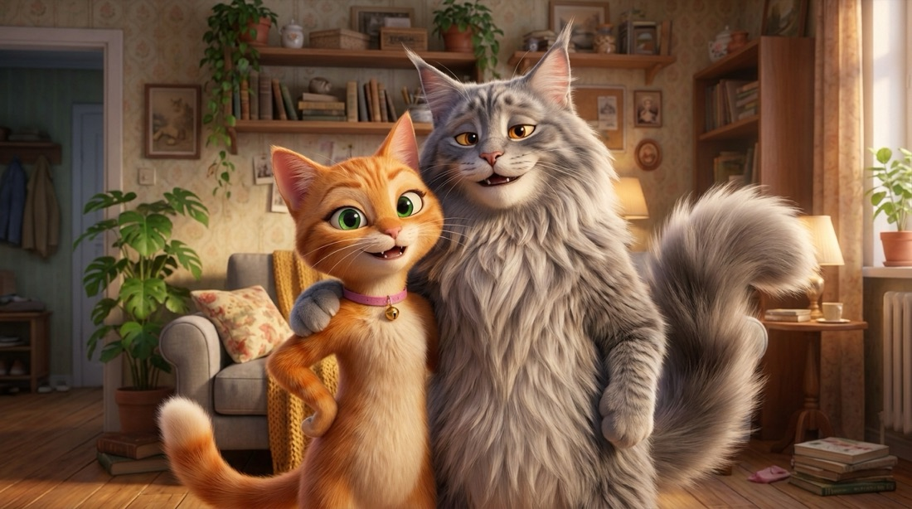

<!doctype html>
<html lang="ru">
<head>
<meta charset="utf-8">
<meta name="viewport" content="width=device-width,initial-scale=1,viewport-fit=cover">
<meta property="og:title" content="Тест для пар: насколько хорошо вы знаете друг друга?">
<meta property="og:description" content="Проходите вдвоём с одного телефона за 10 минут и сразу получаете разбор вашей пары.">
<meta name="robots" content="noindex">
<title>Тест для пар</title>
<link rel="preconnect" href="https://fonts.googleapis.com">
<link rel="preconnect" href="https://fonts.gstatic.com" crossorigin>
<link rel="stylesheet" href="https://fonts.googleapis.com/css2?family=Unbounded:wght@500;700&family=Manrope:wght@400;500;600;700;800&display=swap">
<style>
html,body{margin:0}
/* Layout: одна карточка-экран, как мобильное приложение. Светлая тема: сиренево-серый фон, белые карточки, поля в цветных подложках, кнопки-таблетки. Партнёр 1 — тёплый рыжий (Кнопка), партнёр 2 — сиреневый */
:root{
  --bg:#f2f1f7;--surface:#ffffff;--ink:#25242a;--muted:#6b6a78;--line:#e7e5ef;
  --a:#f0743a;--a-soft:#fff0e7;--a-line:#f8c9ad;
  --b:#6f7ff0;--b-soft:#eef0ff;--b-line:#c3caf8;
  --accent:var(--a);--accent-soft:var(--a-soft);--accent-line:var(--a-line);
  --smoke:#8a95a8;--ginger:#f0743a;--pink:#e8578a;--gold:#d4a23a;--good:#2f9a62;--good-soft:#e4f5ec;--bad:#d14a4a;--bad-soft:#fde9e9;
  --font-display:"Unbounded","Manrope",system-ui,sans-serif;--font-body:"Manrope",system-ui,-apple-system,"Segoe UI",sans-serif;
  color-scheme:light;
}
.app[data-who="B"]{--accent:var(--b);--accent-soft:var(--b-soft);--accent-line:var(--b-line)}
*{box-sizing:border-box}
body{background:var(--bg);color:var(--ink);font-family:var(--font-body);font-size:17px;line-height:1.5;padding-inline:16px;padding-block:18px 40px}
.app{max-width:500px;margin:0 auto}
h1,h2{font-family:var(--font-display);text-wrap:balance;margin:0;line-height:1.2;letter-spacing:-.01em}
h1{font-size:1.6rem}h2{font-size:1.2rem}
h1 em{font-style:normal;color:var(--b)}
p{margin:0}
.muted{color:var(--muted)}.small{font-size:.9rem}
.card{background:var(--surface);border-radius:28px;padding:22px;display:grid;gap:16px;box-shadow:0 8px 30px rgba(60,55,110,.07)}
.top{display:flex;align-items:center;justify-content:space-between;gap:10px;margin-bottom:12px;min-height:30px}
.who{font-size:.8rem;font-weight:800;padding:6px 12px;border-radius:999px;background:var(--accent-soft);color:var(--accent)}
.who.both{background:#fff;color:var(--muted)}
.bar{flex:1;height:8px;border-radius:999px;background:#fff;overflow:hidden}
.bar i{display:block;height:100%;background:var(--accent);border-radius:999px;transition:width .25s}
.count{font-size:.8rem;color:var(--muted);font-variant-numeric:tabular-nums;white-space:nowrap;font-weight:700}
.btn{font:inherit;font-weight:800;font-size:1.05rem;border:0;border-radius:999px;padding:16px 20px;cursor:pointer;background:var(--accent);color:#fff;width:100%;box-shadow:0 8px 20px color-mix(in srgb,var(--accent) 30%,transparent)}
.btn:disabled{opacity:.35;cursor:default;box-shadow:none}
.btn.ghost{background:#fff;color:var(--muted);box-shadow:none;border:1.5px solid var(--line)}
.btn:focus-visible,.opt:focus-visible,input:focus-visible,textarea:focus-visible{outline:2px solid var(--accent);outline-offset:2px}
.row{display:flex;gap:10px}.row>*{flex:1}
.row .btn.ghost{flex:0 0 38%}
.opts{display:grid;gap:10px}
.opt{font:inherit;text-align:left;background:#f7f6fb;color:var(--ink);border:1.5px solid transparent;border-radius:18px;padding:14px 16px;cursor:pointer;display:flex;gap:10px;align-items:center;font-weight:600}
.opt:hover{border-color:var(--line)}
.opt[aria-pressed="true"]{border-color:var(--accent-line);background:var(--accent-soft);color:var(--ink)}
.pairs{display:grid;gap:10px}
.pair{display:grid;grid-template-columns:1fr auto 1fr;gap:8px;align-items:stretch}
.pair .or{align-self:center;font-size:.72rem;font-weight:800;color:var(--muted)}
.pair .opt{justify-content:center;text-align:center;font-size:.92rem;padding:12px 8px}
.ns{display:grid;gap:4px}
.nsrow{display:grid;grid-template-columns:1fr auto;gap:10px;align-items:center;padding:10px 0;border-bottom:1px solid var(--line)}
.nsrow:last-child{border-bottom:0}
.nsbtns{display:flex;gap:6px}
.nsbtns .opt{padding:9px 12px;font-size:.86rem;font-weight:800;border-radius:999px}
.nsbtns .opt.no[aria-pressed="true"]{border-color:#f3b7b7;background:var(--bad-soft)}
.nsbtns .opt.yes[aria-pressed="true"]{border-color:#a9dcc0;background:var(--good-soft)}
.field{display:grid;gap:2px;padding:12px 16px;border-radius:18px;border:1.5px solid var(--a-line);background:var(--a-soft)}
.field.b{border-color:var(--b-line);background:var(--b-soft)}
.field label{font-size:.82rem;color:var(--muted)}
.field input{font:inherit;font-size:1.1rem;border:0;background:transparent;padding:2px 0;color:var(--ink);outline:none}
textarea{font:inherit;width:100%;padding:14px 16px;border-radius:18px;border:1.5px solid var(--accent-line);background:var(--accent-soft);color:var(--ink);min-height:110px;resize:vertical}
.range{display:grid;gap:8px}
.range input{width:100%;accent-color:var(--accent)}
.range .ends{display:flex;justify-content:space-between;font-size:.85rem;color:var(--muted);gap:12px}
.scale{display:grid;grid-template-columns:repeat(var(--n),1fr);gap:6px}
.scale .opt{justify-content:center;padding:14px 0;font-variant-numeric:tabular-nums}
.chips{display:flex;flex-wrap:wrap;gap:6px}
.chips button{font:inherit;font-size:.85rem;font-weight:600;border:1.5px solid var(--line);background:#fff;color:var(--ink);border-radius:999px;padding:7px 12px;cursor:pointer}
input[type=time],input[type=month]{min-height:42px;-webkit-appearance:none;appearance:none}
.range .val{font-family:var(--font-display);font-size:1.8rem;text-align:center;color:var(--accent)}
.sub{font-size:.8rem;font-weight:800;color:var(--muted);text-transform:uppercase;letter-spacing:.05em}
.consent{display:grid;grid-template-columns:56px 56px 1fr;column-gap:8px;row-gap:6px;align-items:start}
.consent .cn{font-size:.74rem;font-weight:800;text-align:center;padding:4px 4px;border-radius:10px;white-space:nowrap;overflow:hidden;text-overflow:ellipsis}
.consent .cn.a{background:var(--a-soft);color:var(--a)}.consent .cn.b{background:var(--b-soft);color:var(--b)}
.consent input{justify-self:center;width:26px;height:26px;margin:2px 0 0;accent-color:var(--a);cursor:pointer}
.consent input.b{accent-color:var(--b)}
.consent .ctext{font-size:.86rem;color:var(--muted);cursor:pointer}
.check{display:grid;grid-template-columns:22px 1fr;gap:10px;align-items:start;font-size:.86rem;cursor:pointer;color:var(--muted)}
.check input{width:18px;height:18px;margin-top:2px;accent-color:var(--b)}
.hero-cats{width:100%;max-width:340px;aspect-ratio:16/9;object-fit:cover;border-radius:20px;margin:0 auto;display:block}
.art{width:100%;aspect-ratio:16/9;object-fit:cover;display:block;background:#efe9e2}
.center{text-align:center}
.mlist{display:grid;gap:4px}
.note{font-size:.86rem;padding:12px 14px;border-radius:16px;background:var(--b-soft);color:var(--muted)}
pre.out{white-space:pre-wrap;word-break:break-word;font-size:.8rem;background:#f7f6fb;padding:12px;border-radius:14px;max-height:220px;overflow:auto;margin:0}

.joint{display:grid;gap:14px}
.jitem{padding:12px 0;border-bottom:1px solid var(--line);display:grid;gap:8px}
.jitem:last-child{border-bottom:0}
.jq{font-weight:700}
.jrow{display:grid;grid-template-columns:64px 1fr 1fr;gap:6px;align-items:center}
.jname{font-size:.78rem;font-weight:800;overflow:hidden;text-overflow:ellipsis;white-space:nowrap}
.jname.a{color:var(--a)}.jname.b{color:var(--b)}
.jrow .opt{justify-content:center;text-align:center;padding:9px 6px;font-size:.86rem;border-radius:999px}
.jrow.a .opt[aria-pressed="true"]{border-color:var(--a-line);background:var(--a-soft)}
.jrow.b .opt[aria-pressed="true"]{border-color:var(--b-line);background:var(--b-soft)}
.reveal{display:grid;gap:12px}
.score{display:grid;grid-template-columns:1fr 1fr;gap:10px}
.score div{border-radius:20px;padding:14px;text-align:center}
.score .a{background:var(--a-soft)}.score .b{background:var(--b-soft)}
.score b{display:block;font-family:var(--font-display);font-size:1.6rem}
.score .a b{color:var(--a)}.score .b b{color:var(--b)}
.fact{padding:12px 14px;border-radius:16px;background:#f7f6fb;font-size:.95rem}
.two{display:grid;grid-template-columns:1fr 1fr;gap:10px}
.field input.dt{font:inherit;border:0;background:#fff;border-radius:10px;padding:8px;color:var(--ink);width:100%}
.sug{display:grid;gap:4px}
.sug:empty{display:none}
.sug button{text-align:left;background:#fff;border:1px solid var(--line);border-radius:10px;padding:9px 10px;font:inherit;font-size:.95rem;color:var(--ink);cursor:pointer}
.sug small{color:var(--muted)}
.two input{min-width:0}
select{font:inherit;font-size:1rem;border:0;background:transparent;color:var(--ink);padding:4px 0;width:100%}
input[type=date],input[type=time]{font:inherit;border:0;background:#fff;border-radius:10px;padding:8px;color:var(--ink);width:100%}
.rep{display:grid;gap:14px}
.arch{border-radius:24px;padding:20px;background:linear-gradient(135deg,var(--a-soft),var(--b-soft));display:grid;gap:8px;text-align:center}
.arch .lbl{font-size:.75rem;font-weight:800;letter-spacing:.08em;text-transform:uppercase;color:var(--muted)}
.arch h2{font-size:1.5rem}
.days{font-size:.9rem;color:var(--muted)}
.sec{display:grid;gap:10px;padding:0 16px 16px;border-radius:22px;background:#f7f6fb;overflow:hidden}
.secimg{margin:0 -16px 2px;line-height:0}
.sechead{display:flex;flex-wrap:wrap;align-items:center;justify-content:space-between;gap:8px}
.scene-wrap{border-radius:22px;overflow:hidden;line-height:0}
.sech{display:grid;grid-template-columns:96px 1fr;gap:12px;align-items:center}
.sech svg{width:96px;height:64px}
.sech .ttl{display:grid;gap:5px;min-width:0}
.chip{justify-self:start;font-size:.74rem;font-weight:800;padding:4px 10px;border-radius:999px}
.chip.happy{background:var(--good-soft);color:var(--good)}
.chip.ok{background:var(--b-soft);color:var(--b)}
.chip.grumpy{background:#fff1e0;color:#c46a12}
.big{font-family:var(--font-display);font-size:1.15rem}
.sec details{font-size:.9rem}
.sec summary{cursor:pointer;font-weight:800;color:var(--b);list-style:none}
.sec summary::-webkit-details-marker{display:none}
.sec details[open] summary{margin-bottom:6px}
.sec h3{font-family:var(--font-display);font-size:1rem;margin:0;font-weight:500}
.sec p{font-size:.95rem}
.meter{height:8px;border-radius:999px;background:#fff;overflow:hidden}
.meter i{display:block;height:100%;border-radius:999px;background:linear-gradient(90deg,var(--a),var(--b))}
.tip{font-size:.9rem;padding:10px 12px;border-radius:14px;background:#fff}
.tip b{color:var(--b)}
.quote{font-size:.95rem;padding:10px 12px;border-left:3px solid var(--a);background:#fff;border-radius:0 12px 12px 0}
.quote.b{border-left-color:var(--b)}
.sci{display:grid;gap:5px;padding:11px 13px;border-radius:16px;background:#f5f6ff;border:1px solid #dfe3ff}
.sci .t{font-size:.7rem;font-weight:800;letter-spacing:.06em;text-transform:uppercase;color:var(--b)}
.sci p{font-size:.88rem}
.sci .src{font-size:.76rem;color:var(--muted)}
.sec p b{color:var(--a)}
.battle{display:grid;gap:8px;padding:16px;border-radius:22px;background:#fff7f1;border:1.5px solid var(--a-line)}
.battle h3{font-family:var(--font-display);font-size:1.05rem;margin:0 0 4px;font-weight:500}
.brow{display:grid;grid-template-columns:30px 1fr minmax(0,auto);gap:10px;align-items:center;padding:8px 0;border-bottom:1px dashed var(--line)}
.brow:last-child{border-bottom:0}
.brow .e{font-size:1.3rem}
.brow .n{font-weight:800;padding:4px 10px;border-radius:999px;font-size:.88rem;text-align:center;max-width:150px}
.brow .n.a{background:var(--a-soft);color:var(--a)}.brow .n.b{background:var(--b-soft);color:var(--b)}.brow .n.t{background:#f1f0f6;color:var(--muted)}
.bnote{font-size:.85rem;color:var(--muted)}
.main{display:grid;gap:8px;padding:16px;border-radius:22px;background:#f5f6ff;border:1.5px solid #dfe3ff}
.main h3,.manual h3{font-family:var(--font-display);font-size:1.05rem;margin:0 0 4px;font-weight:500}
.main p{font-size:.95rem}.main b{color:var(--b)}
.manual{display:grid;gap:2px;padding:16px;border-radius:22px;background:#fff;border:1.5px solid var(--a-line)}
.manual.b{border-color:var(--b-line)}
.mrow{display:grid;grid-template-columns:28px 1fr;gap:8px;padding:8px 0;border-bottom:1px dashed var(--line);font-size:.93rem}
.mrow:last-child{border-bottom:0}
.mrow .l{display:block;font-size:.78rem;color:var(--muted)}
.mrow .ok{display:block;color:var(--good);font-weight:700;font-size:.82rem}
.mrow .miss{display:block;color:#c46a12;font-size:.82rem}

@media (prefers-reduced-motion:reduce){.bar i{transition:none}}
</style>

</head>
<body>
<div class="app" id="app"></div>

<script src="astronomy.browser.min.js"></script>
<script src="tz.js"></script>
<script>
/* Иллюстрации Мишани и Кнопки, рисуются кодом (SVG). Сцены: hero, cuddle, window, makeup, backs, suitcase */
var CATART=(function(){
  var MG='url(#cmf)', KG='url(#ckf)', ink='#2b2f38', pinkIn='#f2c4c8', bibM='#eef0f4', bibK='#ffe4cf';
  var DEFS='<defs><radialGradient id="cmf" cx="45%" cy="30%" r="75%"><stop offset="0" stop-color="#c3cad6"/><stop offset="1" stop-color="#7b869a"/></radialGradient>'+
    '<radialGradient id="ckf" cx="45%" cy="30%" r="75%"><stop offset="0" stop-color="#ffb57a"/><stop offset="1" stop-color="#e8692b"/></radialGradient>'+
    '<linearGradient id="csky" x1="0" y1="0" x2="0" y2="1"><stop offset="0" stop-color="#2d3561"/><stop offset="1" stop-color="#6f7ff0"/></linearGradient></defs>';
  function g(x,y,s,flip,inner){return '<g transform="translate('+x+' '+y+') scale('+(flip?-s:s)+' '+s+')">'+inner+'</g>'}

  /* Мишаня: (0,0) — низ по центру. face: sleepy | smile | grumpy | neutral | away */
  function misha(face,extra){
    var away=face==='away', grumpy=face==='grumpy';
    var h='';
    h+='<path d="M-50 -18 C-84 -22 -88 -64 -62 -72 C-52 -74 -46 -64 -55 -59 C-68 -53 -64 -31 -42 -28 Z" fill="'+MG+'"/>';
    h+='<path d="M-52 0 C-62 -38 -42 -66 0 -68 C42 -66 58 -34 48 0 Z" fill="'+MG+'"/>';
    if(!away)h+='<path d="M-22 0 C-24 -26 -14 -40 0 -42 C14 -40 24 -26 22 0 Z" fill="'+bibM+'"/>';
    else h+='<path d="M-20 -50 q20 -8 40 0 M-24 -36 q24 -8 48 0 M-26 -22 q26 -8 52 0" stroke="#6e788a" stroke-width="3" fill="none" stroke-linecap="round" opacity=".6"/>';
    /* уши */
    if(grumpy) h+='<path d="M-34 -104 L-62 -112 L-24 -124 Z M34 -104 L62 -112 L24 -124 Z" fill="'+MG+'"/>';
    else h+='<path d="M-34 -104 L-42 -146 L-10 -120 Z M34 -104 L42 -146 L10 -120 Z" fill="'+MG+'"/>'+(away?'':'<path d="M-32 -108 L-37 -136 L-16 -118 Z M32 -108 L37 -136 L16 -118 Z" fill="'+pinkIn+'"/>')+
      '<path d="M-42 -146 L-46 -158 M-42 -146 L-39 -157 M42 -146 L46 -158 M42 -146 L39 -157" stroke="#6e788a" stroke-width="2.6" stroke-linecap="round"/>';
    h+='<path d="M-40 -76 C-46 -102 -30 -126 0 -128 C30 -126 46 -102 40 -76 C46 -60 28 -46 0 -46 C-28 -46 -46 -60 -40 -76 Z" fill="'+MG+'"/>';
    if(away){ h+='<path d="M-8 -120 l3 12 M0 -122 v14 M8 -120 l-3 12" stroke="#6e788a" stroke-width="2.6" stroke-linecap="round"/>'; return h+(extra||''); }
    h+='<path d="M-32 -66 C-36 -54 -22 -42 0 -42 C22 -42 36 -54 32 -66 C26 -54 12 -50 0 -50 C-12 -50 -26 -54 -32 -66 Z" fill="'+bibM+'"/>';
    h+='<path d="M-6 -118 l2 10 M0 -120 v12 M6 -118 l-2 10" stroke="#6e788a" stroke-width="2.4" stroke-linecap="round"/>';
    if(face==='sleepy')h+='<path d="M-24 -90 q8 6 16 0 M8 -90 q8 6 16 0" stroke="'+ink+'" stroke-width="3" fill="none" stroke-linecap="round"/>';
    else if(face==='smile')h+='<path d="M-24 -88 q8 -8 16 0 M8 -88 q8 -8 16 0" stroke="'+ink+'" stroke-width="3" fill="none" stroke-linecap="round"/>';
    else if(grumpy)h+='<path d="M-24 -90 h15 M9 -90 h15" stroke="'+ink+'" stroke-width="3" stroke-linecap="round"/><path d="M-26 -99 l14 4 M26 -99 l-14 4" stroke="'+ink+'" stroke-width="2.4" stroke-linecap="round"/>';
    else h+='<circle cx="-15" cy="-90" r="5" fill="#d9a63a"/><circle cx="15" cy="-90" r="5" fill="#d9a63a"/><circle cx="-15" cy="-90" r="2.4" fill="'+ink+'"/><circle cx="15" cy="-90" r="2.4" fill="'+ink+'"/><circle cx="-13.5" cy="-91.5" r="1.2" fill="#fff"/><circle cx="16.5" cy="-91.5" r="1.2" fill="#fff"/>';
    h+='<path d="M-4 -78 l4 4 l4 -4 Z" fill="#d98a96"/>';
    h+=grumpy?'<path d="M-7 -66 q7 -5 14 0" stroke="'+ink+'" stroke-width="2" fill="none" stroke-linecap="round"/>':'<path d="M0 -74 v4 M0 -70 q-5 4 -9 1 M0 -70 q5 4 9 1" stroke="'+ink+'" stroke-width="2" fill="none" stroke-linecap="round"/>';
    h+='<path d="M-30 -74 h-18 M-30 -70 l-16 5 M30 -74 h18 M30 -70 l16 5" stroke="#f4f5f8" stroke-width="1.5" stroke-linecap="round"/>';
    if(face!=='grumpy')h+='<ellipse cx="-24" cy="-76" rx="6" ry="3.5" fill="#f2b4bd" opacity=".6"/><ellipse cx="24" cy="-76" rx="6" ry="3.5" fill="#f2b4bd" opacity=".6"/>';
    h+='<ellipse cx="-18" cy="-2" rx="13" ry="7" fill="'+bibM+'"/><ellipse cx="18" cy="-2" rx="13" ry="7" fill="'+bibM+'"/>';
    return h+(extra||'');
  }
  /* Кнопка: face: open | squint | happy | grumpy | away; glasses: true */
  function knopka(face,opt){
    opt=opt||{}; var away=face==='away';
    var h='<path d="M24 -10 C50 -14 52 -46 34 -52" stroke="'+KG+'" stroke-width="9" fill="none" stroke-linecap="round"/>';
    h+='<path d="M-24 0 C-30 -28 -16 -44 0 -45 C16 -44 30 -28 24 0 Z" fill="'+KG+'"/>';
    if(!away)h+='<path d="M-10 0 C-10 -16 -6 -24 0 -25 C6 -24 10 -16 10 0 Z" fill="'+bibK+'"/>';
    h+='<path d="M-20 -70 L-25 -96 L-5 -80 Z M20 -70 L25 -96 L5 -80 Z" fill="'+KG+'"/>'+(away?'':'<path d="M-18 -74 L-21 -89 L-9 -80 Z M18 -74 L21 -89 L9 -80 Z" fill="'+pinkIn+'"/>');
    h+='<ellipse cx="0" cy="-60" rx="26" ry="23" fill="'+KG+'"/>';
    h+='<path d="M-6 -80 l2 7 M0 -82 v8 M6 -80 l-2 7" stroke="#c8551e" stroke-width="2.2" stroke-linecap="round"/>';
    h+='<path d="M-20 -42 q20 9 40 0" stroke="#e8578a" stroke-width="5" fill="none" stroke-linecap="round"/><circle cx="0" cy="-34" r="5" fill="#e3b341"/><path d="M-4 -35 h8" stroke="#b88a1e" stroke-width="1.2"/>';
    if(away) return h;
    var eye=function(cx){return '<ellipse cx="'+cx+'" cy="-60" rx="6.5" ry="7.5" fill="#2f9a62"/><ellipse cx="'+cx+'" cy="-59" rx="2.4" ry="5" fill="#1d2420"/><circle cx="'+(cx+2)+'" cy="-63" r="1.8" fill="#fff"/>'};
    if(face==='open')h+=eye(-10)+eye(10);
    else if(face==='squint')h+=eye(-10)+'<path d="M5 -59 q6 -4 12 0" stroke="'+ink+'" stroke-width="3" fill="none" stroke-linecap="round"/>';
    else if(face==='happy')h+='<path d="M-16 -58 q6 -7 12 0 M4 -58 q6 -7 12 0" stroke="'+ink+'" stroke-width="3" fill="none" stroke-linecap="round"/>';
    else if(face==='grumpy')h+='<path d="M-16 -59 h11 M5 -59 h11" stroke="'+ink+'" stroke-width="3" stroke-linecap="round"/><path d="M-18 -67 l10 3 M18 -67 l-10 3" stroke="'+ink+'" stroke-width="2.2" stroke-linecap="round"/>';
    if(opt.glasses)h+='<rect x="-21" y="-67" width="17" height="11" rx="4" fill="#1d2420"/><rect x="4" y="-67" width="17" height="11" rx="4" fill="#1d2420"/><path d="M-4 -62 h8" stroke="#1d2420" stroke-width="2"/><path d="M-18 -65 l5 0" stroke="#fff" stroke-width="1.4" opacity=".6"/>';
    h+='<path d="M-3 -51 l3 3 l3 -3 Z" fill="#e58a95"/>';
    h+=face==='grumpy'?'<path d="M-5 -44 q5 -3 10 0" stroke="'+ink+'" stroke-width="1.6" fill="none" stroke-linecap="round"/>':'<path d="M0 -48 v2 M0 -46 q-4 3 -7 0 M0 -46 q4 3 7 0" stroke="'+ink+'" stroke-width="1.6" fill="none" stroke-linecap="round"/>';
    h+='<path d="M-18 -52 h-12 M18 -52 h12" stroke="#fff3e8" stroke-width="1.3" stroke-linecap="round"/>';
    h+='<ellipse cx="-10" cy="-2" rx="8" ry="5" fill="'+bibK+'"/><ellipse cx="10" cy="-2" rx="8" ry="5" fill="'+bibK+'"/>';
    return h;
  }
  function heart(x,y,s,c){return '<path transform="translate('+x+' '+y+') scale('+s+')" d="M0 0 c-4 -8 -16 -4 -12 5 c2 5 12 11 12 11 c0 0 10 -6 12 -11 c4 -9 -8 -13 -12 -5 Z" fill="'+(c||'#e8578a')+'"/>'}
  function cloud(x,y){return '<g transform="translate('+x+' '+y+')"><path d="M-30 10 q-2 -16 14 -16 q6 -14 22 -8 q16 -6 20 10 q14 0 12 14 h-64 q-8 -2 -4 0 Z" fill="#c9cfdb"/><path d="M2 14 l-6 10 h7 l-5 11" stroke="#e3b341" stroke-width="3" fill="none" stroke-linecap="round" stroke-linejoin="round"/></g>'}
  function shadow(x,w){return '<ellipse cx="'+x+'" cy="236" rx="'+w+'" ry="7" fill="#000" opacity=".07"/>'}
  function wrap(bg,inner,label){return '<svg viewBox="0 0 400 250" role="img" aria-label="'+label+'" style="width:100%;height:auto;display:block">'+DEFS+'<rect width="400" height="250" fill="'+bg+'"/>'+inner+'</svg>'}

  var S={};
  /* Обложка: диван с пледом, Кнопка сидит у Мишани на спине */
  S.hero=function(){
    var h='<rect x="40" y="150" width="320" height="70" rx="22" fill="#d7d9e3"/><rect x="28" y="120" width="344" height="52" rx="24" fill="#c7cad8"/><rect x="40" y="200" width="320" height="36" rx="14" fill="#c2c5d3"/>';
    h+='<path d="M210 150 q60 -10 120 6 l10 60 q-70 10 -140 -4 Z" fill="#e2b34a"/><path d="M228 160 l-6 50 M252 158 l-4 52 M276 158 l-2 54 M300 160 l0 54" stroke="#cf9d33" stroke-width="3"/>';
    h+=g(170,212,1,false,misha('sleepy'));
    h+=g(196,104,.62,false,knopka('squint'));
    h+=heart(258,52,1.2)+heart(282,40,.7,'#f39ab5');
    return wrap('#f6efe9',h,'Мишаня и Кнопка на диване');
  };
  /* Совпали: спят в обнимку */
  S.cuddle=function(){
    var h=shadow(200,120)+g(170,232,1,false,misha('sleepy'))+g(250,232,.78,true,knopka('happy'))+'<path d="M206 196 q34 10 58 -4" stroke="'+MG+'" stroke-width="16" fill="none" stroke-linecap="round"/><ellipse cx="262" cy="191" rx="10" ry="7" fill="'+bibM+'"/>';
    h+=heart(214,40,1.3)+heart(240,24,.7,'#f39ab5')+'<text x="300" y="80" font-size="22" fill="#9aa3b5" font-family="sans-serif" font-weight="700">z z</text>';
    return wrap('#fdeee6',h,'Мишаня и Кнопка спят в обнимку');
  };
  /* По-разному, но ок: на подоконнике, каждый смотрит в своё окно */
  S.window=function(){
    var h='<rect x="70" y="20" width="260" height="170" rx="14" fill="url(#csky)"/><path d="M200 20 v170 M70 105 h260" stroke="#f3f1f7" stroke-width="8"/><rect x="62" y="12" width="276" height="186" rx="18" fill="none" stroke="#f3f1f7" stroke-width="10"/>';
    h+='<circle cx="290" cy="56" r="16" fill="#fff7d6"/><circle cx="296" cy="50" r="14" fill="#3a4277"/><circle cx="110" cy="50" r="2" fill="#fff"/><circle cx="150" cy="80" r="1.6" fill="#fff"/><circle cx="240" cy="40" r="1.8" fill="#fff"/><circle cx="170" cy="40" r="1.4" fill="#fff"/>';
    h+='<rect x="40" y="196" width="320" height="18" rx="6" fill="#e9e4dc"/>';
    h+=g(140,198,.8,true,misha('neutral'))+g(270,198,.7,false,knopka('open'));
    return wrap('#eef0fb',h,'Мишаня и Кнопка на подоконнике');
  };
  /* Мирятся: Мишаня несёт Кнопке рыбку */
  S.makeup=function(){
    var fish='<g transform="translate(0 -60)"><path d="M10 0 q22 -14 44 0 q-22 14 -44 0 Z" fill="#8fc6e8"/><path d="M54 0 l12 -9 v18 Z" fill="#7ab4d8"/><circle cx="20" cy="-2" r="2.4" fill="#1d2420"/></g>';
    var h=shadow(200,120)+g(150,232,1,false,misha('smile',fish))+g(290,232,.78,true,knopka('squint'));
    h+=heart(232,70,.9)+heart(250,52,.6,'#f39ab5');
    return wrap('#eaf6ef',h,'Мишаня несёт Кнопке рыбку');
  };
  /* Есть о чём поговорить: спиной друг к другу, носок на полу, тучка */
  S.backs=function(){
    var h=shadow(200,130)+g(140,232,1,false,misha('away'))+g(272,232,.8,false,knopka('away'));
    h+='<path d="M196 230 q-8 -4 -6 -14 l4 -22 h14 l-2 20 q8 4 6 12 q-4 6 -16 4 Z" fill="#f4f4f6" stroke="#cfd3dc" stroke-width="2"/><path d="M193 196 h15" stroke="#e8578a" stroke-width="4"/>';
    h+=cloud(205,40);
    return wrap('#f2efe9',h,'Мишаня и Кнопка сидят спиной друг к другу');
  };
  /* Деньги: оба в чемодане, Кнопка в очках */
  S.suitcase=function(){
    var h=shadow(200,140)+g(160,214,.9,false,misha('smile'))+g(262,200,.82,false,knopka('happy',{glasses:true}));
    h+='<rect x="70" y="170" width="260" height="66" rx="16" fill="#c9824a"/><rect x="70" y="170" width="260" height="14" rx="7" fill="#b06d38"/><rect x="180" y="196" width="40" height="12" rx="4" fill="#e3b341"/><path d="M110 170 v66 M290 170 v66" stroke="#b06d38" stroke-width="6"/>';
    h+='<path d="M320 60 l6 -14 l6 14 l14 2 l-10 10 l3 14 l-13 -7 l-13 7 l3 -14 l-10 -10 Z" fill="#ffd36b"/><text x="40" y="60" font-size="34">✈️</text>';
    return wrap('#e8f1fd',h,'Мишаня и Кнопка в чемодане');
  };
  return S;
})();
/* Иллюстрации с Мишаней и Кнопкой (Nano Banana Pro, паспорт героев 21.10.2026) вместо нарисованных кодом SVG */
CATART=(function(){
  var ALT={hand:'Кнопка отвечает, Мишаня закрыл глаза',reveal:'Мишаня и Кнопка заглядывают в телефон',stars:'Мишаня и Кнопка смотрят на звёзды',know:'Мишаня гадает, что хочет Кнопка',support:'Мишаня радуется хорошей новости Кнопки',chores:'Мишаня моет посуду, Кнопка руководит',humor:'Мишаня и Кнопка хохочут над телефоном',hero:'Мишаня и Кнопка',cuddle:'Мишаня и Кнопка спят в обнимку',window:'Мишаня и Кнопка у окна',backs:'Мишаня и Кнопка сидят спиной друг к другу',makeup:'Мишаня несёт Кнопке рыбку',suitcase:'Мишаня и Кнопка собираются в отпуск'};
  var S={};
  Object.keys(ALT).forEach(function(k){S[k]=function(){return ''}});
  return S;
})();


/* ===== ВОПРОСЫ =====
   Часть 1 «вместе»: joint-вопросы на одном экране (оба видят ответы).
   Часть 2 «тайно»: по очереди, ответы скрыты. guess — отвечаешь за себя и угадываешь партнёра.
   Шкалы и источники: см. question_evidence.md */
var JOINT = [
  /* Близость (ECR-R; Joel 2020), быт (PREPARE/ENRICH), деньги (Dew 2012) */
  {id:'q7', scale:'mix', type:'ns', text:'Это норм или стрём?', hint:'Каждый отвечает за себя. Спорить можно 😄', items:['Уехать на выходные с друзьями без партнёра','Знать пароли от телефонов друг друга','Оставить носки на полу до выходных','Оставить посуду отмокать до завтра','Купить дорогую вещь, не посоветовавшись','Спать в обнимку всю ночь']},
  /* Планы и игра (Aron 2000; PREPARE/ENRICH) */
  {id:'q11', scale:'plans', type:'pairs', text:'Что вам ближе?', hint:'Каждый выбирает за себя, не раздумывая', items:[['Настолки 🎲','Сериал 🎬'],['Дом за городом 🏡','Квартира в центре 🌆'],['Отпуск по плану','Отпуск спонтанно'],['Вечер с друзьями','Вечер вдвоём'],['Ранний подъём','Поспать подольше']]}
];
var Q = [
  /* Понимание партнёра — Love Maps (Gottman), точность (Fletcher & Kerr 2010) */
  {id:'q1', scale:'understand', type:'guess', text:'Вы заказываете доставку, и каждому можно выбрать только одно блюдо. Что выберешь ты?', opts:['Пиццу 🍕','Суши 🍣','Шаурму 🌯','Бургер 🍔','Салат 🥗'], short:['пиццу','суши','шаурму','бургер','салат']},
  {id:'q2', scale:'understand', type:'guess', text:'Какая мелочь бесит тебя сильнее всего?', opts:['Медленный интернет','Когда рядом чавкают','Опоздания','Длинные голосовые сообщения','Гора посуды в раковине'], short:['медленный интернет','чавканье','опоздания','длинные голосовые','гору посуды']},
  /* Ссоры и примирение — Gottman 1998/2000, конфликт в топ-5 Joel 2020 */
  {id:'q3', scale:'conflict', type:'guess', text:'Что тебе нужно после ссоры?', opts:['Сразу обняться и всё обсудить 🫂','Остыть пару часов 🧊','Получить вкусняшку и забыть ссору 🍫','Лечь спать, утром всё пройдёт 😴'], short:['сразу обняться и всё обсудить','остыть пару часов','получить вкусняшку и забыть ссору','лечь спать']},
  {id:'q4', scale:'conflict', type:'slider', who:true, text:'Кто у вас обычно первым идёт мириться?', min:0, max:10, left:'чаще я', right:'чаще {P}'},
  /* Поддержка — Gable 2004/2006, Algoe 2012, appreciation в топ-5 Joel 2020 */
  {id:'q5', scale:'support', type:'guess', text:'Тебя повысили на работе, ты рассказываешь об этом. Какая реакция партнёра порадует тебя больше всего?', opts:['«Рассказывай всё!» 🎉','«Отмечаем!» 🍾','«А зарплату подняли?» 🤓','«Я знал(а), что так будет» 😌'], short:['«рассказывай всё!»','«отмечаем!»','«а зарплату подняли?»','«я знал(а)!»']},
  {id:'q6', scale:'support', type:'slider', text:'Замечает ли {P}, что ты делаешь для вас двоих?', hint:'0 — совсем не замечает, 10 — всегда замечает и благодарит', min:0, max:10, left:'совсем не замечает', right:'всегда замечает'},
  /* Близость и надёжность — ECR-R/ECR-S, воспринимаемая преданность №1 у Joel 2020 */
  {id:'q8', scale:'closeness', type:'slider', text:'Если в жизни начнутся трудности, насколько ты уверен(а), что {P} тебя поддержит?', hint:'0 — совсем не уверен(а), 10 — уверен(а) на 100%', min:0, max:10, left:'не уверен(а)', right:'уверен(а) на 100%'},
  /* Деньги — Dew, Britt & Huston 2012 */
  {id:'q9', scale:'money', type:'guess', text:'Вам неожиданно достались 100 000 ₽. Что с ними сделать?', opts:['Поехать в отпуск ✈️','Отложить 🏦','Купить что-то для дома 🛋️','Поделить пополам, каждому на свои хотелки 🎁'], short:['отпуск','отложить','купить что-то для дома','поделить пополам']},
  /* Быт и роли — восприятие вклада */
  {id:'q10', scale:'roles', type:'slider', who:true, text:'Кто у вас больше занимается домашними делами?', min:0, max:10, left:'чаще я', right:'чаще {P}'},
  /* Юмор — Hall 2017 */
  {id:'q12', scale:'humor', type:'guess', text:'Над чем ты смеёшься до слёз?', opts:['Мемы','Стендап','Свои неудачи','Свои же шутки','Видео с котиками','Шутки партнёра 😄'], short:['мемы','стендап','свои неудачи','свои шутки','видео с котиками','шутки партнёра'], inst:['мемами','стендапом','своими неудачами','своими же шутками','видео с котиками','шутками партнёра']},
  /* Планы — цитата в отчёт */
  {id:'q13', scale:'plans', type:'open', text:'Что ты хочешь сделать вместе в этом году? Напиши одну вещь', ph:'Например: съездить на море без телефонов', chips:[['Путешествие ✈️','Съездить вместе в '],['Новое хобби 🎨','Начать вместе '],['Спорт 🏃','Вместе заняться '],['Дом 🏠','Сделать дома '],['Накопить 💰','Накопить на '],['Свидания 🌹','Чаще ходить на свидания'],['Питомец 🐾','Завести питомца']]}
];
var FEEDBACK = [
  {id:'f_acc', type:'slider', text:'Насколько разбор получился про вас?', min:1, max:5, left:'вообще не про нас', right:'прямо в точку'},
  {id:'f_time', type:'choice', text:'Сколько примерно времени занял тест?', opts:['До 5 минут','5–10 минут','10–15 минут','Больше 15 минут']},
  {id:'f_fun', type:'slider', text:'Насколько было интересно проходить?', min:1, max:5, left:'скучно', right:'очень'},
  {id:'f_part', type:'choice', text:'Какая часть понравилась больше всего?', opts:['Отвечать вместе и спорить','Угадывать ответы партнёра','Раскрытие ответов в конце','Всё одинаково']},
  {id:'f_best', type:'open', text:'Какой вопрос понравился больше всего и какой бесил?', ph:'Например: «угадай, что выберет партнёр» — топ, а про деньги — странно'},
  {id:'f_pay', type:'choice', text:'Полный разбор вашей пары. Сколько готовы заплатить?', opts:['Ничего, только бесплатно','До 299 ₽','До 499 ₽','До 990 ₽','Больше']},
  {id:'f_share', type:'choice', text:'Посоветовали бы этот тест знакомым парам?', opts:['Да, уже есть кому','Скорее да','Скорее нет','Нет']}
];

var FG = location.hash==='#fg'; /* фокус-группа: после теста — вопросы про тест */
var S = {step:'intro', a:'', b:'', since:'', who:'A', i:0, ans:{A:{},B:{}}, fb:{}, solar:{want:null, A:{}, B:{}}};
var app = document.getElementById('app');
function esc(s){return String(s).replace(/[&<>"]/g,function(c){return {'&':'&amp;','<':'&lt;','>':'&gt;','"':'&quot;'}[c]})}
function nm(w){return w==='A'?(S.a||'Партнёр 1'):(S.b||'Партнёр 2')}
function other(w){return w==='A'?'B':'A'}
function sub(t){return t.replace(/\{P\}/g,esc(nm(other(S.who)))).replace(/\{ME\}/g,esc(nm(S.who)))}
function plain(t,w){return t.replace(/\{P\}/g,nm(other(w))).replace(/\{ME\}/g,nm(w))}

var CATS='';
function catsImg(k,alt){return ''}

var TOTAL = JOINT.length + Q.length*2;
function progress(){ if(S.step==='joint')return S.i; if(S.step==='q')return JOINT.length+(S.who==='B'?Q.length:0)+S.i; return 0 }
function topbar(label,cls){return '<div class="top"><span class="who'+(cls?' '+cls:'')+'">'+label+'</span><div class="bar"><i style="width:'+(progress()/TOTAL*100)+'%"></i></div><span class="count">'+(progress()+1)+' / '+TOTAL+'</span></div>'}
function navrow(canBack){return '<div class="row">'+(canBack?'<button class="btn ghost" id="back">Назад</button>':'')+'<button class="btn" id="next">Дальше</button></div>'}

var SAVED=null, STATE_V=10;
/* Сохраняем только шаги основного теста. После «done» стираем: ответы и даты рождения не должны достаться следующей паре на этом телефоне */
var STEPS=['jointintro','joint','hand','q','revealintro','reveal','report','solar','solarform','solarres','solarfull','solarsoon','fbintro','fb'];
function saveState(){
  if(S.fbOnly||S.demo||location.hash)return;
  try{
    if(S.step==='done'||S.step==='fin'){localStorage.removeItem('tp_state');return}
    if(STEPS.indexOf(S.step)<0)return;
    S.ts=Date.now(); S.v=STATE_V; localStorage.setItem('tp_state',JSON.stringify(S));
  }catch(e){}
}
function savedOk(x){
  if(!x||x.v!==STATE_V||STEPS.indexOf(x.step)<0||!x.ts||Date.now()-x.ts>864e5)return false;
  if(x.step==='q'&&!Q[x.i]||x.step==='joint'&&!JOINT[x.i]||x.step==='fb'&&!FEEDBACK[x.i])return false;
  return !!(x.a&&x.b);
}
function render(){
  var h=''; saveState();
  if(S.step==='resume'){
    h='<div class="card center">'+CATS+'<h2>Продолжим?</h2><p class="muted">'+esc(SAVED.a+' и '+SAVED.b)+', вы уже начали тест на этом телефоне. Можно продолжить с того же места.</p><button class="btn" id="go">Продолжить</button><button class="btn ghost" id="restart">Начать заново</button></div>';
    app.innerHTML=h; bind(); window.scrollTo(0,0); return;
  }
  if(S.step==='intro'){
    h='<div class="card"><div class="scene-wrap">'+CATART.hero()+'</div><div class="center" style="display:grid;gap:10px"><h1>Тест проходят <em>вдвоём</em> с одного телефона</h1><p class="muted">Сначала отвечаете вместе, потом каждый тайно, а в конце открываете ответы друг друга и получаете разбор пары. Минут 8–10. А в самом конце — бонус: соляр вашей пары на год ✨</p></div>'+
      '<div class="note">Ваши ответы никуда не отправляются: они остаются на этом телефоне, а разбор пары вы получите сразу в конце.</div>'+
      '<div style="display:grid;gap:10px"><div class="field"><label for="na">Как зовут первого</label><input type="text" id="na" maxlength="20" autocomplete="off" placeholder="Например, Юля" value="'+esc(S.a)+'"></div>'+
      '<div class="field b"><label for="nb">Как зовут второго</label><input type="text" id="nb" maxlength="20" autocomplete="off" placeholder="Например, Дима" value="'+esc(S.b)+'"></div>'+
      '<div class="field" style="border-color:var(--line);background:#f7f6fb"><label for="since">Когда начали встречаться (можно примерно)</label><input type="month" id="since" value="'+esc(S.since)+'"></div></div>'+
      /* Согласие ставит каждый партнёр за себя: колонка с именем у каждого */
      '<div class="consent"><span class="cn a" id="cnA">'+esc(S.a||'Первый')+'</span><span class="cn b" id="cnB">'+esc(S.b||'Второй')+'</span><span></span>'+
      '<input type="checkbox" id="c1a" aria-label="Согласие первого"><input type="checkbox" id="c1b" class="b" aria-label="Согласие второго"><label for="c1a" class="ctext">Мне есть 18 лет. Я понимаю, что тест развлекательный и не заменяет консультацию специалиста</label></div>'+
      '<button class="btn" id="go" disabled>Начать</button></div>';
  } else if(S.step==='jointintro'){
    h='<div class="card center">'+CATS+'<h2>Часть 1. Вместе</h2><p class="muted">Садитесь рядом. В каждом вопросе у каждого своя строка с именем: отвечайте за себя. Спорить можно и нужно 😄</p><button class="btn" id="go">Поехали</button></div>';
  } else if(S.step==='joint'){
    var j=JOINT[S.i];
    h=topbar('Вместе','both')+'<div class="card">'+jointhtml(j)+navrow(S.i>0)+'</div>';
  } else if(S.step==='hand'){
    h='<div class="card center">'+catsImg('hand')+'<h2>'+(S.who==='A'?'Часть 2. Тайно<br>Отвечает '+esc(nm('A')):'Передай телефон<br>Теперь отвечает '+esc(nm('B')))+'</h2>'+
      '<p class="muted">'+(S.who==='A'?esc(nm('B'))+', отвернись 🙈 '+esc(nm('A'))+', в каждом вопросе два шага: сначала отвечаешь за себя, потом угадываешь, что на тот же вопрос ответит '+esc(nm('B'))+'.':'Готово, ответы спрятаны. '+esc(nm('B'))+', теперь твоя очередь, и тоже без подглядываний. Сначала отвечаешь за себя, потом угадываешь, что на тот же вопрос ответил(а) '+esc(nm('A'))+'.')+'</p>'+
      '<button class="btn" id="go">'+(S.who==='A'?'Я '+esc(nm('A'))+', начинаю':'Я '+esc(nm('B'))+', начинаю')+'</button></div>';
  } else if(S.step==='q'){
    var q=Q[S.i];
    h=topbar(esc(nm(S.who)))+'<div class="card">'+qhtml(q, S.ans[S.who][q.id])+navrow(S.i>0)+'</div>';
  } else if(S.step==='revealintro'){
    h='<div class="card center"><div class="scene-wrap">'+CATART.reveal()+'</div><h2>Часть 3. Открываем ответы</h2><p class="muted">Садитесь снова вместе. Сейчас узнаете, насколько хорошо вы знаете друг друга.</p><button class="btn" id="go">Открыть</button></div>';
  } else if(S.step==='reveal'){
    h='<div class="card reveal">'+revealhtml()+'<button class="btn" id="go">Дальше</button></div>';
  } else if(S.step==='report2'){
    h=(location.hash==='#demo'?'<div class="note" style="margin-bottom:12px">Это пример разбора для пары Юли и Димы. Ваш будет про вас.</div>':'')+'<div class="card rep">'+reporthtml()+'<button class="btn" id="go">'+(location.hash==='#demo'?'Пройти тест самим':'Назад')+'</button></div>';
  } else if(S.step==='report'){
    h='<div class="card rep">'+reporthtml()+'<button class="btn" id="go">Дальше</button></div>';
  } else if(S.step==='solar'){
    h='<div class="card">'+catsImg('stars')+'<div class="center" style="display:grid;gap:8px"><h2>Обещанный бонус: соляр пары ✨</h2><p class="muted">Соляр — это астрологический прогноз на ваш текущий год жизни, от дня рождения до следующего. Посчитаем для каждого и покажем, каким будет год для вас вдвоём. Нужны дата и город рождения, время — если знаете.</p></div>'+
      '<div class="row"><button class="btn ghost" id="no">Нет, спасибо</button><button class="btn" id="yes">Хочу</button></div></div>';
  } else if(S.step==='solarsoon'){
    h='<div class="card center">'+catsImg('stars')+'<h2>Скоро будет! 🌙</h2><p class="muted">Соляр пары сейчас в разработке. Спасибо за интерес: так мы понимаем, что делать в первую очередь.</p><button class="btn" id="go">Дальше</button></div>';
  } else if(S.step==='solarform'){
    h='<div class="card"><h2>Данные для соляра</h2><p class="muted small">Время рождения можно не указывать, но с ним точнее. Город можно ввести любой: начните печатать, появятся подсказки.</p>'+
      '<datalist id="cityList">'+CITIES.map(function(c){return '<option value="'+esc(c[0])+'">'}).join('')+'</datalist>'+
      solarfields('A')+solarfields('B')+'<p class="small muted" id="serr" aria-live="polite"></p><button class="btn" id="go" disabled>Рассчитать соляр ✨</button></div>';
  } else if(S.step==='solo'){
    h='<div class="card"><div class="scene-wrap">'+CATART.stars()+'</div><h2>Ваш соляр на год ✨</h2>'+
      '<p class="muted small">Соляр — астрологический прогноз на ваш текущий год жизни, от дня рождения до следующего. Время рождения можно не указывать, но с ним точнее. Город можно ввести любой: начните печатать, появятся подсказки.</p>'+
      '<div class="field" style="border-color:var(--line);background:#f7f6fb"><label for="soloName">Как вас зовут</label><input type="text" id="soloName" maxlength="20" autocomplete="off" placeholder="Например, Юля" value="'+esc(S.a==='Партнёр 1'?'':S.a)+'"></div>'+
      '<datalist id="cityList">'+CITIES.map(function(c){return '<option value="'+esc(c[0])+'">'}).join('')+'</datalist>'+
      solarfields('A',true).replace(/<label>[^<]*<\/label>/,'')+'<p class="small muted" id="serr" aria-live="polite"></p><button class="btn" id="go" disabled>Рассчитать соляр ✨</button></div>';
  } else if(S.step==='solores'){
    var rs=solarCalc(S.solar.A);
    if(!rs){h=SOLAR_FAIL;}else
    h='<div class="card rep"><div class="scene-wrap">'+CATART.stars()+'</div>'+solarCard('A',rs)+
      '<p class="small muted center">Соляр — развлекательный астрологический прогноз. Он рассчитан по положению планет в момент, когда Солнце в этом году возвращается в точку вашего рождения. Поэтому Луна и Венера здесь — из карты года и могут отличаться от натальных.</p>'+
      '<button class="btn" id="full">Открыть полный соляр ✨</button><button class="btn ghost" id="go">Посчитать для другого человека</button></div>';
  } else if(S.step==='solarres'){
    var ra=solarCalc(S.solar.A), rb=solarCalc(S.solar.B);
    if(!ra||!rb){h=SOLAR_FAIL;}else
    h='<div class="card rep"><div class="scene-wrap">'+CATART.stars()+'</div>'+solarCouple(ra,rb)+solarCard('A',ra)+solarCard('B',rb)+'<p class="small muted center">Соляр — развлекательный астрологический прогноз. Он рассчитан по положению планет в момент, когда Солнце в этом году возвращается в точку вашего рождения. Поэтому Луна и Венера здесь — из карты года и могут отличаться от натальных.</p><button class="btn" id="full">Открыть полный соляр ✨</button><button class="btn ghost" id="go">Дальше</button></div>';
  } else if(S.step==='solarfull'){
    var solo=S.fullSolo, fa=solarCalc(S.solar.A), fb=solo?null:solarCalc(S.solar.B);
    if(!fa||(!solo&&!fb)){h=SOLAR_FAIL;}else
    h='<div class="card rep"><div class="scene-wrap">'+CATART.stars()+'</div>'+(solo?'':solarCoupleFull(fa,fb))+solarFullCard('A',fa)+(solo?'':solarFullCard('B',fb))+
      '<p class="small muted center">Соляр — развлекательный астрологический прогноз на год: положение планет в момент, когда Солнце возвращается в точку вашего рождения. Дома — по системе Плацидуса, как в большинстве астрологических сервисов (за полярным кругом — по знакам).</p><button class="btn" id="go">'+(solo?'Назад':'Дальше')+'</button></div>';
  } else if(S.step==='fbintro'){
    h='<div class="card center">'+CATS+'<h2>Помогите сделать тест лучше</h2><p class="muted">'+(S.fbOnly?'Вы уже прошли тест вдвоём — спасибо! ':'')+'7 коротких вопросов про сам тест. Ваши ответы на тест мы не видим и не спрашиваем.</p><button class="btn" id="go">Ответить</button></div>';
  } else if(S.step==='fb'){
    var f=FEEDBACK[S.i];
    h='<div class="top"><span class="who both">Про тест</span><div class="bar"><i style="width:'+(S.i/FEEDBACK.length*100)+'%"></i></div><span class="count">'+(S.i+1)+' / '+FEEDBACK.length+'</span></div>'+
      '<div class="card">'+qhtml(f, S.fb[f.id])+navrow(S.i>0)+'</div>';
  } else if(S.step==='fin'){
    h='<div class="card">'+CATS+'<div class="center" style="display:grid;gap:8px"><h2>Готово! 🧡</h2><p class="muted">Спасибо, что прошли тест вдвоём. Если было интересно, отправьте его знакомым парам: пусть тоже проверят, насколько хорошо знают друг друга.</p></div>'+
      '<button class="btn" id="share">Поделиться тестом</button><p class="small muted center" id="shared" aria-live="polite"></p>'+
      (S.ans.A.q1?'<button class="btn ghost" id="again">Ещё раз посмотреть наш разбор</button>':'')+
      '<p class="small muted center" style="margin-top:14px">Ещё больше про жизнь пар — в мультсериале про котов Мишаню и Кнопку: <a href="https://vk.ru/misha.i.knopka" target="_blank" rel="noopener" style="color:inherit">ВКонтакте</a> · <a href="https://www.youtube.com/@misha.i.knopka" target="_blank" rel="noopener" style="color:inherit">YouTube</a></p></div>';
  } else if(S.step==='done'){
    var txt=payload();
    h='<div class="card">'+CATS+'<div class="center" style="display:grid;gap:8px"><h2>Последний шаг 🧡</h2><p class="muted">Нажмите кнопку ниже, чтобы отправить оценку. Это 5 секунд, а для нас это самое ценное: по вашим отзывам мы доделываем тест. Уйдут только оценки и общий счёт угадываний, сами ответы останутся у вас.</p></div>'+
      '<a class="btn" style="text-align:center;text-decoration:none;display:block" href="https://t.me/jokovu?text='+encodeURIComponent(txt)+'" target="_blank" rel="noopener">Отправить оценку в Telegram</a>'+
      '<p class="small muted center">Откроется чат с готовым текстом — останется нажать «Отправить».</p>'+
      '<button class="btn ghost" id="copy">Скопировать оценку</button><p class="small muted center" id="copied" aria-live="polite"></p>'+
      '<details><summary class="small muted">Что отправится</summary><pre class="out" id="out">'+esc(txt)+'</pre></details>'+
      (S.fbOnly||!S.ans.A.q1?'</div>':'<button class="btn ghost" id="again">Ещё раз посмотреть наш разбор</button></div>');
  }
  app.dataset.who=(S.step==='q'||S.step==='hand')?S.who:'A';
  app.innerHTML=h; bind(); window.scrollTo(0,0);
}

function dateIso(id){
  var el=document.getElementById(id), g=el.value.replace(/\D/g,'').slice(0,8);
  var f=g.slice(0,2)+(g.length>2?'.'+g.slice(2,4):'')+(g.length>4?'.'+g.slice(4):'');
  if(el.value!==f)el.value=f;
  if(g.length<8)return '';
  var dd=+g.slice(0,2), mm=+g.slice(2,4), yy=+g.slice(4);
  if(dd<1||dd>31||mm<1||mm>12||yy<1920||yy>new Date().getFullYear())return '';
  var t=new Date(Date.UTC(yy,mm-1,dd)); if(t.getUTCDate()!==dd||t>new Date())return '';  /* 31.02 и даты в будущем не принимаем */
  return g.slice(4)+'-'+g.slice(2,4)+'-'+g.slice(0,2);
}
function citySuggest(ids,upd){
  ids.forEach(function(id){
    var el=document.getElementById(id), box=document.getElementById('sg_'+id), timer=null, seq=0;
    if(!el||!box)return;
    el.addEventListener('focus',function(){setTimeout(function(){el.scrollIntoView({block:'center',behavior:'smooth'})},350)});
    var pick=function(c){GEO[cityKey(c[0])]=c;el.value=c[0];box.innerHTML='';upd();};
    var show=function(list){
      box.innerHTML='';
      list.slice(0,6).forEach(function(c){var b=document.createElement('button');b.type='button';
        b.innerHTML=esc(c[0].split(', ')[0])+(c[0].indexOf(', ')>0?' <small>'+esc(c[0].split(', ').slice(1).join(', '))+'</small>':'');
        b.onclick=function(){pick(c)};box.appendChild(b)});
      var q=el.value.trim();
      if(q.length>=3&&!list.some(function(c){return cityKey(c[0].split(', ')[0])===cityKey(q)})){
        var f=document.createElement('button');f.type='button';f.textContent='🔎 Найти «'+q+'»';
        f.onclick=function(){f.disabled=true;f.textContent='Ищем…';geocode(q).then(function(c){
          if(c){pick(c)}else{f.disabled=false;f.textContent='Не нашли «'+q+'». Попробуйте ближайший город'}})};
        box.appendChild(f);
      }
    };
    el.addEventListener('input',function(){
      var k=cityKey(el.value), my=++seq; clearTimeout(timer);
      if(k.length<2||cityFind(el.value)&&cityKey(cityFind(el.value)[0])===k){box.innerHTML='';return}
      var loc=CITIES.filter(function(c){return cityKey(c[0]).indexOf(k)===0});
      show(loc);
      if(k.length<3||loc.length>=6)return;
      timer=setTimeout(function(){
        fetch('https://photon.komoot.io/api/?limit=8&lang=default&q='+encodeURIComponent(el.value.trim())).then(function(r){return r.json()}).then(function(d){
          if(my!==seq)return;
          var seen={}, ext=(d.features||[]).filter(function(f){var pr=f.properties||{};return pr.osm_key==='place'&&/city|town|village|hamlet|locality|municipality/.test(pr.osm_value||'')})
            .map(function(f){var pr=f.properties, lon=f.geometry.coordinates[0], lat=f.geometry.coordinates[1];
              return [[pr.name,pr.state,pr.country].filter(Boolean).join(', '),lat,lon,Math.round(lon/15)]})
            .filter(function(c){var key=cityKey(c[0]);if(seen[key])return false;seen[key]=1;return !loc.some(function(l){return cityKey(l[0])===key})});
          show(loc.concat(ext));
        }).catch(function(){});
      },400);
    });
  });
}
function solarfields(w,noName){
  var d=S.solar[w]||{}, ask=S.askNames&&!noName, real=w==='A'?S.a:S.b, def=w==='A'?'Партнёр 1':'Партнёр 2';
  return '<div class="field'+(w==='B'?' b':'')+'" style="gap:8px"><label>'+(ask?(w==='A'?'Первый партнёр':'Второй партнёр'):esc(nm(w)))+'</label>'+
    (ask?'<label for="nm'+w+'">Имя</label><input type="text" id="nm'+w+'" maxlength="20" autocomplete="off" placeholder="'+(w==='A'?'Например, Юля':'Например, Дима')+'" value="'+esc(real&&real!==def?real:'')+'">':'')+
    '<label for="bd'+w+'">Дата и время рождения</label><div class="two"><input type="text" class="dt" inputmode="numeric" maxlength="10" placeholder="ДД.ММ.ГГГГ" autocomplete="off" id="bd'+w+'" value="'+esc(d.date?d.date.split('-').reverse().join('.'):'')+'" aria-label="Дата рождения '+esc(nm(w))+'"><input type="time" id="bt'+w+'" value="'+esc(d.time||'')+'" aria-label="Время рождения '+esc(nm(w))+'"></div>'+
    '<label for="bc'+w+'">Город рождения</label><input type="text" id="bc'+w+'" autocomplete="off" placeholder="Начните вводить город" value="'+esc(d.city||'')+'"><div class="sug" id="sg_bc'+w+'"></div>'+
    '<label for="bn'+w+'">Где живёте сейчас</label><input type="text" id="bn'+w+'" autocomplete="off" placeholder="Начните вводить город" value="'+esc(d.now||'')+'"><div class="sug" id="sg_bn'+w+'"></div>'+
    '<p class="small muted">Нет вашего города в подсказках? Впишите как есть — найдём сами, даже маленький посёлок.</p></div>';
}
function jointhtml(j){
  var A=S.ans.A[j.id]||{}, B=S.ans.B[j.id]||{};
  var h='<h2>'+esc(j.text)+'</h2>'+(j.hint?'<p class="muted small">'+esc(j.hint)+'</p>':'')+'<div class="joint">';
  j.items.forEach(function(it,n){
    var labels=j.type==='ns'?['Норм','Стрём']:[it[0],it[1]], vals=j.type==='ns'?[1,0]:[0,1];
    h+='<div class="jitem" data-n="'+n+'">'+(j.type==='ns'?'<div class="jq">'+esc(it)+'</div>':'');
    ['A','B'].forEach(function(w){var cur=(w==='A'?A:B)[n];
      h+='<div class="jrow '+w.toLowerCase()+'" data-w="'+w+'"><span class="jname '+w.toLowerCase()+'">'+esc(nm(w))+'</span>'+
        labels.map(function(l,k){return '<button class="opt" data-k="'+vals[k]+'" aria-pressed="'+(cur===vals[k])+'">'+esc(l)+'</button>'}).join('')+'</div>';
    });
    h+='</div>';
  });
  return h+'</div>';
}

function qhtml(q,v){
  var h='<h2>'+sub(q.text)+'</h2>'+(q.hint?'<p class="muted small">'+sub(q.hint)+'</p>':'');
  if(q.type==='choice'||q.type==='multi'){
    h+='<div class="opts">'+q.opts.map(function(o,k){var on=q.type==='multi'?(v||[]).indexOf(k)>=0:v===k;return '<button class="opt" data-k="'+k+'" aria-pressed="'+on+'">'+sub(o)+'</button>'}).join('')+'</div>';
  } else if(q.type==='guess'){
    v=v||{};
    h+='<p class="sub">1. Про тебя: что выберешь ты?</p><div class="opts" data-part="me">'+q.opts.map(function(o,k){return '<button class="opt" data-k="'+k+'" aria-pressed="'+(v.me===k)+'">'+sub(o)+'</button>'}).join('')+'</div>'+
       '<p class="sub">2. Угадай: что выберет '+esc(nm(other(S.who)))+'?</p><p class="muted small" style="margin-top:-6px">'+esc(nm(other(S.who)))+' отвечает на этот же вопрос за себя. Попробуй угадать.</p><div class="opts" data-part="guess">'+q.opts.map(function(o,k){return '<button class="opt" data-k="'+k+'" aria-pressed="'+(v.guess===k)+'">'+sub(o)+'</button>'}).join('')+'</div>';
  } else if(q.type==='slider'){
    /* Кнопки вместо ползунка: во встроенном браузере Telegram ползунок не тянется и сбрасывается */
    if(q.who){
      var W=[[0,'Чаще я'],[3,'Скорее я'],[5,'Поровну'],[7,'Скорее {P}'],[10,'Чаще {P}']];
      h+='<div class="opts">'+W.map(function(x){return '<button class="opt" data-sv="'+x[0]+'" aria-pressed="'+(v===x[0])+'">'+sub(x[1])+'</button>'}).join('')+'</div>';
    } else {
      var n=q.max-q.min+1, vals=[]; for(var k=q.min;k<=q.max;k++)vals.push(k);
      h+='<div class="range"><div class="scale" style="--n:'+(n>6?6:n)+'">'+vals.map(function(k){return '<button class="opt" data-sv="'+k+'" aria-pressed="'+(v===k)+'">'+k+'</button>'}).join('')+'</div>'+(q.hint?'':'<div class="ends"><span>'+q.min+' — '+sub(q.left)+'</span><span>'+q.max+' — '+sub(q.right)+'</span></div>')+'</div>';
    }
  } else if(q.type==='open'){
    h+='<textarea id="ta" maxlength="400" placeholder="'+esc(sub(q.ph||'Напиши как есть'))+'">'+esc(v||'')+'</textarea>';
    if(q.chips)h+='<p class="muted small">Не знаешь, что написать? Нажми на подсказку и допиши</p><div class="chips">'+q.chips.map(function(c,k){return '<button type="button" data-chip="'+k+'">'+esc(c[0])+'</button>'}).join('')+'</div>';
  }
  return h;
}

function done(q,v){
  if(q.type==='open')return true;
  if(v==null)return false;
  if(q.type==='multi')return v.length>0;
  if(q.type==='guess')return v.me!=null&&v.guess!=null;
  return true;
}
function jointdone(j){var A=S.ans.A[j.id]||{},B=S.ans.B[j.id]||{};return j.items.every(function(_,n){return A[n]!=null&&B[n]!=null})}

/* ===== СОЛЯР: расчёт (astronomy-engine, MIT) + трактовки ===== */
var CITIES=[['Москва',55.756,37.617,3],['Санкт-Петербург',59.939,30.316,3],['Новосибирск',55.008,82.935,7],['Екатеринбург',56.838,60.597,5],['Казань',55.796,49.106,3],['Нижний Новгород',56.327,44.006,3],['Челябинск',55.160,61.403,5],['Самара',53.195,50.101,4],['Омск',54.989,73.369,6],['Ростов-на-Дону',47.222,39.720,3],['Уфа',54.735,55.958,5],['Красноярск',56.010,92.852,7],['Воронеж',51.661,39.200,3],['Пермь',58.010,56.229,5],['Волгоград',48.708,44.513,3],['Краснодар',45.035,38.975,3],['Саратов',51.533,46.034,4],['Тюмень',57.153,65.534,5],['Тольятти',53.507,49.420,4],['Ижевск',56.852,53.204,4],['Барнаул',53.348,83.779,7],['Иркутск',52.287,104.305,8],['Ульяновск',54.314,48.403,4],['Хабаровск',48.480,135.071,10],['Владивосток',43.115,131.885,10],['Ярославль',57.626,39.893,3],['Махачкала',42.983,47.504,3],['Томск',56.484,84.948,7],['Оренбург',51.768,55.097,5],['Кемерово',55.355,86.087,7],['Калининград',54.710,20.452,2],['Сочи',43.585,39.723,3],['Тула',54.193,37.617,3],['Рязань',54.629,39.742,3],['Мурманск',68.970,33.075,3],['Архангельск',64.539,40.516,3],['Севастополь',44.616,33.525,3],['Минск',53.904,27.559,3],['Алматы',43.238,76.946,5],['Астана',51.169,71.449,5],['Ташкент',41.311,69.280,5],['Бишкек',42.874,74.570,6],['Ереван',40.177,44.513,4],['Тбилиси',41.716,44.783,4],['Баку',40.409,49.867,4],['Киев',50.450,30.524,2],['Кишинёв',47.011,28.864,2],['Рига',56.950,24.106,2],['Таллин',59.437,24.754,2],['Вильнюс',54.687,25.280,2],['Астрахань',46.35,48.04,4],['Белгород',50.60,36.59,3],['Брянск',53.24,34.36,3],['Владимир',56.13,40.41,3],['Вологда',59.22,39.89,3],['Иваново',57.00,40.97,3],['Калуга',54.51,36.26,3],['Киров',58.60,49.66,3],['Кострома',57.77,40.93,3],['Курск',51.73,36.19,3],['Липецк',52.61,39.59,3],['Орёл',52.97,36.06,3],['Пенза',53.20,45.00,3],['Псков',57.82,28.33,3],['Смоленск',54.78,32.05,3],['Тамбов',52.72,41.45,3],['Тверь',56.86,35.90,3],['Великий Новгород',58.52,31.27,3],['Петрозаводск',61.79,34.36,3],['Сыктывкар',61.67,50.84,3],['Чебоксары',56.15,47.25,3],['Йошкар-Ола',56.63,47.89,3],['Саранск',54.18,45.18,3],['Набережные Челны',55.74,52.40,3],['Ставрополь',45.04,41.97,3],['Пятигорск',44.04,43.06,3],['Владикавказ',43.02,44.68,3],['Нальчик',43.49,43.61,3],['Грозный',43.32,45.69,3],['Симферополь',44.95,34.10,3],['Новороссийск',44.72,37.77,3],['Таганрог',47.21,38.94,3],['Череповец',59.13,37.90,3],['Подольск',55.43,37.54,3],['Балашиха',55.80,37.94,3],['Химки',55.89,37.44,3],['Мытищи',55.91,37.73,3],['Королёв',55.92,37.82,3],['Курган',55.44,65.34,5],['Магнитогорск',53.41,58.98,5],['Нижний Тагил',57.91,59.97,5],['Сургут',61.25,73.40,5],['Нижневартовск',60.94,76.57,5],['Ханты-Мансийск',61.00,69.02,5],['Новый Уренгой',66.08,76.63,5],['Стерлитамак',53.63,55.95,5],['Энгельс',51.50,46.12,4],['Сызрань',53.16,48.47,4],['Новокузнецк',53.76,87.12,7],['Абакан',53.72,91.43,7],['Норильск',69.35,88.20,7],['Улан-Удэ',51.83,107.58,8],['Чита',52.03,113.50,9],['Якутск',62.03,129.73,9],['Благовещенск',50.27,127.53,9],['Комсомольск-на-Амуре',50.55,137.01,10],['Южно-Сахалинск',46.96,142.74,11],['Магадан',59.56,150.80,11],['Петропавловск-Камчатский',53.04,158.65,12],['Гомель',52.43,30.98,3],['Брест',52.10,23.69,3],['Витебск',55.19,30.20,3],['Гродно',53.68,23.83,3],['Могилёв',53.90,30.33,3],['Караганда',49.80,73.10,5],['Шымкент',42.32,69.59,5],['Самарканд',39.65,66.96,5],['Душанбе',38.56,68.79,5],['Харьков',49.99,36.23,2],['Одесса',46.48,30.72,2],['Днепр',48.46,35.05,2],['Донецк',48.02,37.80,3],['Луганск',48.57,39.33,3],['Батуми',41.64,41.64,4],['Хошимин',10.776,106.701,7],['Ханой',21.028,105.854,7],['Нячанг',12.238,109.197,7],['Дананг',16.054,108.202,7],['Фукуок',10.227,103.967,7],['Фантхьет',10.933,108.1,7],['Муйне',10.933,108.287,7],['Далат',11.94,108.458,7],['Вунгтау',10.346,107.084,7],['Хойан',15.88,108.335,7],['Бангкок',13.756,100.502,7],['Пхукет',7.88,98.392,7],['Паттайя',12.927,100.877,7],['Чиангмай',18.788,98.985,7],['Самуи',9.512,100.014,7],['Краби',8.086,98.906,7],['Хуахин',12.568,99.958,7],['Бали',-8.65,115.217,8],['Денпасар',-8.65,115.217,8],['Убуд',-8.507,115.263,8],['Чангу',-8.65,115.13,8],['Джакарта',-6.208,106.846,7],['Пекин',39.904,116.407,8],['Шанхай',31.23,121.474,8],['Гуанчжоу',23.129,113.264,8],['Шэньчжэнь',22.543,114.058,8],['Гонконг',22.32,114.17,8],['Харбин',45.803,126.535,8],['Санья',18.253,109.512,8],['Чэнду',30.573,104.066,8],['Ханчжоу',30.274,120.155,8],['Далянь',38.914,121.615,8],['Урумчи',43.825,87.617,8],['Хэйхэ',50.245,127.499,8],['Суйфэньхэ',44.396,131.155,8],['Сингапур',1.352,103.82,8],['Куала-Лумпур',3.139,101.687,8],['Пенанг',5.414,100.329,8],['Манила',14.6,120.984,8],['Пномпень',11.556,104.928,7],['Сиемреап',13.367,103.845,7],['Вьентьян',17.975,102.633,7],['Сеул',37.567,126.978,9],['Токио',35.676,139.65,9],['Улан-Батор',47.886,106.906,8],['Гоа',15.49,73.827,5.5],['Дели',28.614,77.209,5.5],['Коломбо',6.927,79.861,5.5],['Катманду',27.717,85.324,5.75],['Мале',4.175,73.509,5],['Дубай',25.205,55.271,4],['Абу-Даби',24.453,54.377,4],['Стамбул',41.008,28.978,3],['Анталья',36.897,30.713,3],['Тель-Авив',32.085,34.781,2],['Лимасол',34.707,33.022,2],['Белград',44.787,20.457,1]];
var SIGNS=['Овен','Телец','Близнецы','Рак','Лев','Дева','Весы','Скорпион','Стрелец','Козерог','Водолей','Рыбы'];
var SIGNS_IN=['в Овне','в Тельце','в Близнецах','в Раке','во Льве','в Деве','в Весах','в Скорпионе','в Стрельце','в Козероге','в Водолее','в Рыбах'];
var ASC_T=['Год смелых решений и новых стартов. Энергии много, терпения меньше: захочется действовать первым.','Спокойный, «заземлённый» год. Хочется стабильности, уюта, вкусной еды и понятных денег.','Год движения и общения: поездки, переписки, новые знакомства и идеи.','Год дома и близких. В фокусе семья, уют и чувства. Вы мягче и чувствительнее обычного.','Год, когда хочется сиять: творчество, внимание, яркие моменты и смелое «я».','Год наведения порядка: режим, работа и дела, до которых давно не доходили руки.','Год отношений и баланса: партнёрство, красота, умение договариваться.','Год глубины и перемен: отпустить старое и разобраться в главном.','Год широких горизонтов: путешествия, учёба, новые смыслы и оптимизм.','Год целей и ответственности: карьера, планы на годы вперёд, серьёзные шаги.','Год свободы и нестандартных решений: друзья, идеи, неожиданные повороты.','Год интуиции и мечты: творчество, отдых, внутренняя тишина.'];
var HOUSE_T=['вы сами: новый образ, личные цели и решения','деньги и ценности: доходы, покупки, уверенность в себе','общение и учёба: поездки, курсы, разговоры, соседи и родственники','дом и семья: ремонт, переезд, уют, близкие','радость и романтика: свидания, творчество, удовольствия','работа и режим: дела, привычки, забота о себе','партнёрство: отношения в центре года','большие перемены, общие деньги и доверие','путешествия, обучение и новые взгляды','карьера и статус: заметные шаги в работе','друзья и планы: компании, сообщества, мечты на будущее','отдых и восстановление: тишина, внутренняя работа, перезагрузка'];
var HOUSE_SHORT=['себя и свои цели','деньги и ценности','общение и учёбу','дом и семью','радость и романтику','работу и режим','партнёрство','большие перемены','путешествия и обучение','карьеру','друзей и планы','отдых и восстановление'];
var MOON_T=['эмоции вспыхивают быстро и быстро проходят','нужна стабильность и телесный комфорт','настроение меняется, помогают разговоры','тянет домой, чувствительность выше обычного','хочется, чтобы замечали и хвалили','успокаивают порядок и забота о мелочах','ссоры выбивают из колеи, важна гармония','чувства глубокие и сильные','спасают движение и новые впечатления','эмоции сдержанные, опора — в делах','нужны свобода и своё пространство','мечтательность, нужны тишина и отдых'];
var VENUS_T=['любовь с инициативой и страстью','любовь через нежность, подарки и уют','любовь через флирт, разговоры и лёгкость','любовь через заботу и семейное тепло','любовь с размахом: романтика и красивые жесты','любовь через заботу делами и внимание к мелочам','любовь через гармонию и красивые свидания','любовь глубокая, с сильными чувствами','любовь-приключение: поездки и новое вдвоём','любовь надёжная, время серьёзных шагов','любовь как дружба: свобода и общие интересы','любовь нежная и романтичная, с ноткой мечты'];
var ELEM=['огня','земли','воздуха','воды'];
function sNorm(x){x%=360;return x<0?x+360:x}
function cityKey(n){return String(n||'').trim().toLowerCase().replace(/ё/g,'е')}
var GEO={};
function cityFind(name){var k=cityKey(name);for(var i=0;i<CITIES.length;i++)if(cityKey(CITIES[i][0])===k)return CITIES[i];return GEO[k]||null}
function cityBy(name){return cityFind(name)||CITIES[0]}
function geocode(name){
  return fetch('https://nominatim.openstreetmap.org/search?format=json&limit=1&accept-language=ru&q='+encodeURIComponent(name))
    .then(function(r){return r.json()}).then(function(d){ if(!d||!d.length)return null;
      var lat=+d[0].lat, lon=+d[0].lon, c=[String(name).trim(),lat,lon,Math.round(lon/15)]; GEO[cityKey(name)]=c; return c; })
    .catch(function(){return null});
}
var SOLAR_FAIL='<div class="card center">'+'<h2>Не получилось посчитать 😿</h2><p class="muted">Похоже, не загрузился модуль расчёта. Обновите страницу и попробуйте ещё раз.</p><button class="btn" id="go">Дальше</button></div>';
/* Nominatim просит не чаще 1 запроса в секунду — ищем города по очереди */
function geoSeq(list){return list.reduce(function(p,n,i){return p.then(function(r){return (i?new Promise(function(s){setTimeout(s,1100)}):Promise.resolve()).then(function(){return geocode(n)}).then(function(c){r.push(c);return r})})},Promise.resolve([]))}
/* Дома по Плацидусу (как в большинстве астросервисов). За полярным кругом Плацидус не строится — тогда дома по знакам */
function placidus(ramc,lat,eps){
  var R=Math.PI/180, f=lat*R, e=eps*R, cusps=new Array(12);
  var lamOf=function(ra){return sNorm(Math.atan2(Math.sin(ra*R),Math.cos(ra*R)*Math.cos(e))/R)};
  var asc=sNorm(Math.atan2(Math.cos(ramc*R),-(Math.sin(ramc*R)*Math.cos(e)+Math.tan(f)*Math.sin(e)))/R), mc=lamOf(ramc);
  var cusp=function(k,night){var ra=ramc+(night?180:0)+(night?-1:1)*k*30, lam;
    for(var i=0;i<30;i++){lam=lamOf(ra);var dec=Math.asin(Math.sin(e)*Math.sin(lam*R)),x=Math.tan(f)*Math.tan(dec);if(Math.abs(x)>=1)return null;
      var ad=Math.asin(x)/R, sa=night?90-ad:90+ad, nra=ramc+(night?180-k*sa/3:k*sa/3); if(Math.abs(((nra-ra)%360+540)%360-180)<1e-7){ra=nra;break} ra=nra;}
    return lamOf(ra)};
  var c11=cusp(1,false),c12=cusp(2,false),c3=cusp(1,true),c2=cusp(2,true);
  if(c11==null||c12==null||c2==null||c3==null)return null;
  cusps[0]=asc;cusps[1]=c2;cusps[2]=c3;cusps[3]=sNorm(mc+180);cusps[4]=sNorm(c11+180);cusps[5]=sNorm(c12+180);
  cusps[6]=sNorm(asc+180);cusps[7]=sNorm(c2+180);cusps[8]=sNorm(c3+180);cusps[9]=mc;cusps[10]=c11;cusps[11]=c12;
  return cusps;
}
function houseIn(l,r){if(!r.cusps)return ((Math.floor(sNorm(l)/30)-r.ascS+12)%12)+1;
  for(var i=0;i<12;i++){var a=r.cusps[i],b=r.cusps[(i+1)%12],x=sNorm(l-a);if(x<sNorm(b-a))return i+1}return 1}
function solarCalc(d){
  if(!window.Astronomy||!d||!d.date)return null;
  /* координаты найденных городов храним вместе с ответом: после перезагрузки GEO пустой */
  var bc=d.geo||cityBy(d.city), nc=d.nowGeo||cityFind(d.now)||bc;
  var p=d.date.split('-'), tm=(d.time||'12:00').split(':');
  var birth=new Date(localToUtc(bc,Date.UTC(+p[0],+p[1]-1,+p[2],+tm[0],+tm[1])));
  var natal=Astronomy.SunPosition(Astronomy.MakeTime(birth)).elon;
  /* день смены знака: без времени рождения знак Солнца не определить точно */
  var d0=new Date(localToUtc(bc,Date.UTC(+p[0],+p[1]-1,+p[2],0,0))), d1=new Date(d0.getTime()+864e5-6e4);
  var s0=Math.floor(Astronomy.SunPosition(Astronomy.MakeTime(d0)).elon/30), s1=Math.floor(Astronomy.SunPosition(Astronomy.MakeTime(d1)).elon/30);
  var edge=!d.time&&s0!==s1?[s0,s1]:null;
  /* начало солярного года — последнее уже наступившее возвращение Солнца, а не полночь дня рождения */
  var now=new Date(), y=now.getUTCFullYear();
  var t=Astronomy.SearchSunLongitude(natal, Astronomy.MakeTime(new Date(Date.UTC(y-1,+p[1]-1,+p[2])-5*864e5)), 20);
  if(!t)return null;
  var t2=Astronomy.SearchSunLongitude(natal, t.AddDays(360), 20); if(t2&&t2.date<=now)t=t2;
  var ramc=sNorm(Astronomy.SiderealTime(t)*15+nc[2]), eps=23.4393*Math.PI/180, r=ramc*Math.PI/180, f=nc[1]*Math.PI/180;
  var asc=sNorm(Math.atan2(Math.cos(r),-(Math.sin(r)*Math.cos(eps)+Math.tan(f)*Math.sin(eps)))*180/Math.PI);
  var sun=Astronomy.SunPosition(t).elon, moon=Astronomy.EclipticGeoMoon(t).lon, ven=Astronomy.Ecliptic(Astronomy.GeoVector(Astronomy.Body.Venus,t,true)).elon;
  var ascS=Math.floor(asc/30), sunS=Math.floor(sun/30), cusps=placidus(ramc,nc[1],23.4393);
  var local=utcToLocal(nc,t.date.getTime());
  return {start:local, ascS:ascS, cusps:cusps, house:houseIn(sun,{cusps:cusps,ascS:ascS}), moonS:Math.floor(moon/30), venS:Math.floor(ven/30), sunS:sunS, exact:!!d.time, city:nc[0], t:t, nc:nc, edge:edge};
}
function solarDate(dt){var m=['января','февраля','марта','апреля','мая','июня','июля','августа','сентября','октября','ноября','декабря'];return dt.getUTCDate()+' '+m[dt.getUTCMonth()]+' '+dt.getUTCFullYear()+' в '+('0'+dt.getUTCHours()).slice(-2)+':'+('0'+dt.getUTCMinutes()).slice(-2)}
function solarCard(w,res){
  var cls=w==='A'?'a':'b';
  return '<div class="sec"><div class="sechead" style="padding-top:14px"><h3>'+esc(nm(w))+'</h3><span class="chip '+(w==='A'?'grumpy':'ok')+'">Солнце '+esc(SIGNS_IN[res.sunS])+'</span></div>'+
    '<p class="small muted">Ваш солярный год начался '+esc(solarDate(res.start))+' ('+esc(res.city)+')'+(res.exact?'':'. Без точного времени рождения прогноз приблизительный')+'.</p>'+(res.edge?'<p class="small note">В ваш день рождения Солнце переходило из знака '+esc(SIGNS[res.edge[0]])+' в знак '+esc(SIGNS[res.edge[1]])+'. Без времени рождения мы посчитали на полдень — укажите время, чтобы знак определился точно.</p>':'')+
    '<div class="big">Асцендент года '+esc(SIGNS_IN[res.ascS])+'</div><p>'+esc(ASC_T[res.ascS])+'</p>'+
    '<div class="sci"><span class="t">☀️ Главная сфера года · '+res.house+'-й дом</span><p>'+esc(HOUSE_T[res.house-1].charAt(0).toUpperCase()+HOUSE_T[res.house-1].slice(1))+'.</p></div>'+
    '<p class="small"><b>🌙 Эмоции:</b> Луна года '+esc(SIGNS_IN[res.moonS])+' — '+esc(MOON_T[res.moonS])+'.</p>'+
    '<p class="small"><b>💗 Любовь:</b> Венера года '+esc(SIGNS_IN[res.venS])+' — '+esc(VENUS_T[res.venS])+'.</p></div>';
}
function solarCouple(a,b){
  var na=nm('A'), nb=nm('B'), lines=[];
  if(a.house===b.house) lines.push('Вы оба проживаете год про '+HOUSE_SHORT[a.house-1]+'. Хороший повод проживать эту тему вместе.');
  else lines.push(na+': год про '+HOUSE_SHORT[a.house-1]+'. '+nb+': год про '+HOUSE_SHORT[b.house-1]+'. Поддерживайте друг друга в своих темах.');
  if(a.house===5||a.house===7||b.house===5||b.house===7) lines.push('У кого-то из вас Солнце года в доме любви или партнёрства: хорошее время для общих шагов и романтики.');
  if(a.venS%4===b.venS%4) lines.push('У обоих Венера в стихии '+ELEM[a.venS%4]+': в любви в этом году вы говорите на одном языке.');
  else lines.push('Венера у вас в разных стихиях ('+ELEM[a.venS%4]+' и '+ELEM[b.venS%4]+'): вы любите по-разному, и это стоит проговорить.');
  return '<div class="arch"><div class="lbl">Соляр пары</div><h2>Ваш общий год</h2>'+lines.map(function(l){return '<p>'+esc(l)+'</p>'}).join('')+'</div>';
}

/* ===== ПОЛНЫЙ СОЛЯР ===== */
/* Часовой пояс по координатам (tz.js) + историческое смещение из базы браузера (летнее время СССР, 2011–2014 и т.д.) */
function tzAt(c){try{return window.tzlookup?tzlookup(c[1],c[2]):null}catch(e){return null}}
function offAt(tz,ms){
  try{var v={};new Intl.DateTimeFormat('en-US',{timeZone:tz,hourCycle:'h23',year:'numeric',month:'numeric',day:'numeric',hour:'numeric',minute:'numeric',second:'numeric'}).formatToParts(new Date(ms)).forEach(function(x){v[x.type]=+x.value});
    return (Date.UTC(v.year,v.month-1,v.day,v.hour%24,v.minute,v.second)-Math.floor(ms/1000)*1000)/36e5}catch(e){return null}
}
/* местное время рождения → UTC; если пояс не определился — старое смещение из списка городов */
function localToUtc(c,base){var tz=tzAt(c),o=tz&&offAt(tz,base);if(o==null)return base-c[3]*36e5;var u=base-o*36e5,o2=offAt(tz,u);return base-(o2==null?o:o2)*36e5}
function utcToLocal(c,ms){var tz=tzAt(c),o=tz&&offAt(tz,ms);return new Date(ms+(o==null?c[3]:o)*36e5)}
function lonOf(body,t){return body==='Sun'?Astronomy.SunPosition(t).elon:body==='Moon'?Astronomy.EclipticGeoMoon(t).lon:Astronomy.Ecliptic(Astronomy.GeoVector(Astronomy.Body[body],t,true)).elon}
var PL=[['Sun','☀️','Главная сфера года'],['Moon','🌙','Где ваши эмоции'],['Mercury','💬','Мысли и разговоры'],['Venus','💗','Любовь и удовольствия'],['Mars','🔥','Куда пойдёт энергия'],['Jupiter','🍀','Где повезёт'],['Saturn','🪨','Где придётся потрудиться']];
var PL_T={
Moon:['Вы чувствительнее обычного, и это видно по лицу. Важно, чтобы близкие замечали ваше настроение.','Спокойствие даёт финансовая стабильность. Тревога о деньгах — повод составить план, а не паниковать.','Эмоции выходят в разговорах. Помогают долгие переписки и прогулки.','Тянет домой: хочется уюта, семьи и тишины. Дом — главное место силы в этом году.','Хочется радости, праздника и внимания. Настроение поднимают свидания и хобби.','Настроение зависит от порядка в делах и самочувствия. Помогают режим и забота о себе.','Ваше настроение сильно зависит от партнёра. Говорите о чувствах вслух, а не намёками.','Чувства глубокие, иногда тяжёлые. Важно доверять и не держать всё в себе.','Грусть лечат поездки и новые впечатления. Если накрыло — меняйте обстановку.','Много переживаний из-за работы и чужих оценок. Не путайте рабочие неудачи с личными.','Поддержка приходит от друзей. Хочется больше общения и общих планов.','Нужно больше времени наедине с собой. Это не холодность, а способ зарядиться.'],
Mercury:['Много говорите о себе и своих планах. Хороший год, чтобы научиться ясно говорить, чего хотите.','Голова занята деньгами: считаете, сравниваете, ищете подработку. Самое время составить финансовый план.','Много переписок, звонков и коротких поездок. Хорошо для учёбы, курсов, сдачи на права.','Мысли крутятся вокруг дома: ремонт, переезд, разговоры с родными. Обсудите наконец, как вы хотите жить.','Флирт, переписки, творческие идеи. Хорошо писать, снимать, придумывать — и шутить вдвоём.','Голова в работе и бытовых задачах: списки, планы, порядок. Год, чтобы разобрать завалы.','Главные разговоры года — с партнёром: договорённости, общие планы, иногда споры. Лучше проговаривать, чем копить.','Мысли о серьёзном: общие деньги, кредиты, доверие. Время для честных разговоров о том, о чём обычно молчат.','Тянет учиться и узнавать новое: курсы, языки, поездки.','Много думаете о карьере: резюме, переговоры, планы роста. Удачно для собеседований и выступлений.','Много общения с друзьями и единомышленниками, новые идеи из чатов и компаний. Хорошо строить планы на будущее.','Мысли уходят внутрь: больше размышлений, меньше разговоров. Полезно вести заметки и не решать важное на бегу.'],
Venus:['Вы привлекательнее обычного, и это замечают. Хороший год обновить стиль и чаще выходить в люди вместе.','Любовь через подарки и комфорт. Хочется тратить на красивое — договоритесь о бюджете на радости.','Любовь в словах: милые сообщения, комплименты, спонтанные поездки на выходные.','Любовь через уют: хочется вить гнездо, готовить вместе, звать гостей. Хорошо для обустройства общего дома.','Один из самых романтичных годов: свидания, флирт, праздники. Не забывайте ухаживать друг за другом.','Любовь в заботе о мелочах: кофе в постель, помощь с делами. Романтика будничная, но настоящая.','Отношения в центре года. Хорошее время для серьёзных шагов: съехаться, обручиться, пожениться.','Чувства глубже и сильнее, больше страсти и ревности. Держится всё на доверии — и на честном разговоре об общих деньгах.','Любовь-приключение: поездки и всё новое вдвоём. Лучшие моменты года будут в дороге.','Вас видят как пару, возможны знакомства с важными людьми. Работа и личное могут переплетаться.','Любовь как дружба: общие компании, друзья, совместные планы.','Хочется тишины вдвоём: спокойные вечера, отдых без людей. Не все чувства проговариваются — спрашивайте друг друга.'],
Mars:['Энергии много, терпения меньше. Вы решительнее, но и вспыльчивее — считайте до десяти.','Энергия уходит на заработок. Доход можно заметно поднять, но и споры о тратах вероятнее.','Много мелких дел и движения, резкие слова в переписках. Перечитывайте сообщения перед отправкой.','Энергия идёт в дом: ремонт, переезд, перестановки. Возможны трения с родными — делите территорию спокойно.','Страсть, азарт, спорт, хобби. Отличный год для активного отдыха вдвоём, только без лишнего риска.','Энергия в работу: много задач, высокий темп. Следите за отдыхом и не срывайтесь на близких из-за усталости.','Самые жаркие споры года — в паре. Это не страшно, если спорить о деле, а не друг с другом.','Сильные чувства и большие перемены. Возможны споры об общих деньгах — договаривайтесь заранее.','Энергия на поездки, учёбу и новые цели. Можно горячо спорить о взглядах — не обязательно соглашаться во всём.','Энергия на карьеру: амбиции, рывок, конкуренция. Не приносите рабочий стресс домой.','Энергия в друзей и общие проекты. Возможны трения в компаниях — держитесь своих людей.','Энергия уходит внутрь, бывает усталость без причины. Берегите силы и не копите обиды молча.'],
Jupiter:['Год личного роста: больше уверенности и новых возможностей. Говорите «да» интересным предложениям.','Удача в деньгах: шанс увеличить доход или найти новый источник. Главное — не растратить всё на радостях.','Везёт в учёбе, переговорах и поездках. Полезные знакомства — рядом и в соцсетях.','Удача в доме и семье: переезд, своё жильё, пополнение. Дома становится просторнее и спокойнее.','Удача в любви и творчестве. Хороший год для радостей и хобби, а кому-то и для пополнения в семье.','Удача в работе: новая должность, удобный график, полезные привычки. Хорошо заняться здоровьем.','Удача в партнёрстве: отношения крепнут, договорённости складываются. Хороший год для свадьбы.','Удача в общих деньгах: доход партнёра, крупные покупки, инвестиции. Перемены идут на пользу.','Удача в путешествиях, учёбе и всём новом. Год, чтобы поехать далеко.','Удача в карьере: рост, признание, повышение. Самое время заявить о себе.','Удача через друзей и знакомых. Рассказывайте о своих планах — помощь придёт через людей.','Тихая удача: помощь приходит как будто сама. Хороший год для отдыха и восстановления.'],
Saturn:['Год ответственности за себя: режим, дисциплина, взрослые решения. Тяжеловато, но результат останется надолго.','Деньги требуют порядка: бюджет, подушка безопасности, меньше импульсивных покупок.','Нужно доучиться, разобраться с документами, наладить отношения с родственниками. Скучно, но полезно.','Дом и семья требуют сил: ремонт, забота о родителях, бытовые вопросы. Вы закладываете фундамент.','Романтика требует усилий: меньше спонтанности, больше вложений в отношения. Не забывайте отдыхать.','Много работы и рутины. Берегите здоровье и не берите на себя лишнего.','Отношения проходят проверку на прочность. Если договариваться, а не обижаться, пара станет крепче.','Серьёзные вопросы общих денег и долгов. Разберитесь с кредитами и договорённостями — станет легче.','Учёба и поездки даются трудом, зато результат настоящий. Хорошо получить диплом или сертификат.','Карьера требует много сил: ответственность растёт, но и признание будет заслуженным.','Пересмотр круга общения: останутся только свои. Планы на будущее становятся реалистичнее.','Год подведения итогов. Не гоните себя: лучше закончить старое, чем хвататься за новое.']
};
var MONTH_T=['время для себя: новые начинания, обновить образ, заявить о желаниях','деньги: бюджет, крупные покупки, заработок','общение и суета: переписки, короткие поездки, учёба','дом: уют, семья, ремонт, спокойные вечера','романтика: свидания, праздники, хобби и отдых','работа: дела, режим, здоровье — меньше развлечений','партнёрство: важные разговоры и совместные решения','перемены: серьёзные вопросы, общие деньги, глубокие чувства','путешествия и новое: поездки, учёба, новые впечатления','карьера: работа, амбиции, важные встречи','друзья: компании, общие планы, новые знакомства','отдых: замедлиться, выспаться, подвести итоги'];
var RETRO_T={Mercury:['Ретроградный Меркурий','перепроверяйте билеты, договоры и сообщения. Хорошо доделывать старое, а не начинать новое. Могут объявиться старые знакомые.'],Venus:['Ретроградная Венера','чувства пересматриваются, может напомнить о себе прошлое. Не лучшее время для резких перемен во внешности и дорогих покупок.'],Mars:['Ретроградный Марс','энергия буксует, дела затягиваются, споры вспыхивают на пустом месте. Не начинайте ремонт и большие проекты — доделывайте начатое.']};
var MON_S=['янв','фев','мар','апр','мая','июн','июл','авг','сен','окт','ноя','дек'], MON_N=['Январь','Февраль','Март','Апрель','Май','Июнь','Июль','Август','Сентябрь','Октябрь','Ноябрь','Декабрь'];
function dShort(d){return d.getUTCDate()+' '+MON_S[d.getUTCMonth()]}
function signOf(l){return Math.floor(sNorm(l)/30)}
/* ретро-периоды за солярный год: суточный шаг, ищем смену направления движения */
function retroOf(body,t0,c){
  var out=[],prev=lonOf(body,t0),st=null,step=1;
  for(var i=1;i<=366;i+=step){var t=t0.AddDays(i),l=lonOf(body,t),d=((l-prev+540)%360)-180;
    if(d<0&&!st)st=t; if(d>=0&&st){out.push([st,t]);st=null} prev=l;}
  if(st)out.push([st,t0.AddDays(366)]);
  return out.map(function(p){return [utcToLocal(c,p[0].date.getTime()),utcToLocal(c,p[1].date.getTime())]});
}
function solarFull(r){
  var t=r.t, c=r.nc, pos={};
  PL.forEach(function(p){pos[p[0]]=lonOf(p[0],t)});
  /* помесячно: транзитное Солнце проходит дома соляра; границы — входы Солнца в знаки */
  /* 13 отрезков: остаток знака Солнца после дня рождения, 11 полных знаков, начало знака Солнца до следующего дня рождения */
  var months=[], from=t, h0=houseIn(pos.Sun,r), end=Astronomy.SearchSunLongitude(pos.Sun,t.AddDays(360),20)||t.AddDays(365.2422);
  var cuspL=function(h){return r.cusps?r.cusps[h%12]:((r.ascS+h)%12)*30}; /* начало дома h+1 */
  for(var k=0;k<=12;k++){var hh=((h0-1+k)%12)+1, nx=k<12?Astronomy.SearchSunLongitude(cuspL(hh),from.AddDays(1),60):end;if(!nx||nx.date>end.date)nx=end;
    if(nx.date-from.date>12*36e5)months.push({from:utcToLocal(c,from.date.getTime()),to:utcToLocal(c,nx.date.getTime()-864e5),house:hh}); from=nx; if(nx===end)break;}
  return {pos:pos, months:months, retro:{Mercury:retroOf('Mercury',t,c),Venus:retroOf('Venus',t,c),Mars:retroOf('Mars',t,c)}};
}
function solarFullCard(w,res){
  var f=solarFull(res), h='<div class="sec"><div class="sechead" style="padding-top:14px"><h3>'+esc(nm(w))+'</h3><span class="chip '+(w==='A'?'grumpy':'ok')+'">Солнце '+esc(SIGNS_IN[res.sunS])+'</span></div>'+
    '<p class="small muted">Солярный год: с '+esc(solarDate(res.start).replace(/ в (\d\d:\d\d)$/,', $1,'))+' до следующего дня рождения ('+esc(res.city)+')'+(res.exact?'':'. Без точного времени рождения дома могут сдвинуться — читайте как общий ориентир')+'.</p>'+(res.edge?'<p class="small note">В ваш день рождения Солнце переходило из знака '+esc(SIGNS[res.edge[0]])+' в знак '+esc(SIGNS[res.edge[1]])+'. Без времени рождения мы посчитали на полдень — укажите время, чтобы знак определился точно.</p>':'')+
    '<div class="big">Асцендент года '+esc(SIGNS_IN[res.ascS])+'</div><p>'+esc(ASC_T[res.ascS])+'</p>'+
    '<div class="lbl" style="margin-top:6px">Планеты года</div>';
  PL.forEach(function(p){var hs=houseIn(f.pos[p[0]],res), txt=p[0]==='Sun'?HOUSE_T[hs-1].charAt(0).toUpperCase()+HOUSE_T[hs-1].slice(1)+'.':PL_T[p[0]][hs-1];
    h+='<div class="sci"><span class="t">'+p[1]+' '+esc(p[2])+' · '+esc(PLN[p[0]])+' '+esc(SIGNS_IN[signOf(f.pos[p[0]])])+', '+hs+'-й дом</span><p>'+esc(txt)+'</p></div>'});
  h+='<div class="lbl" style="margin-top:6px">Ваш год по месяцам</div><div class="mlist">';
  f.months.forEach(function(m){h+='<p class="small"><b>'+esc(dShort(m.from))+' — '+esc(dShort(m.to))+'</b> · '+esc(MONTH_T[m.house-1])+'</p>'});
  h+='</div><div class="lbl" style="margin-top:6px">Ретроградные периоды</div>';
  var any=false;
  ['Mercury','Venus','Mars'].forEach(function(b){if(!f.retro[b].length)return;any=true;
    h+='<p class="small"><b>'+RETRO_T[b][0]+': '+f.retro[b].map(function(p){return esc(dShort(p[0]))+' — '+esc(dShort(p[1]))}).join(', ')+'.</b> '+esc(RETRO_T[b][1].charAt(0).toUpperCase()+RETRO_T[b][1].slice(1))+'</p>'});
  if(!any)h+='<p class="small">В этом году без ретроградных периодов у Меркурия, Венеры и Марса — редкая удача.</p>';
  return h+'</div>';
}
var PLN={Sun:'Солнце',Moon:'Луна',Mercury:'Меркурий',Venus:'Венера',Mars:'Марс',Jupiter:'Юпитер',Saturn:'Сатурн'};
function aspectKind(a,b){var d=Math.abs(signOf(a)-signOf(b));d=Math.min(d,12-d);return ['conj','other','sext','square','trine','other','opp'][d]}
/* Венера одного и Марс другого. Имена — только в именительном падеже */
var VM_T={conj:'в одном знаке — сильное притяжение. Страсти в этом году хватит.',trine:'в одной стихии — желания совпадают легко, вы понимаете друг друга с полуслова.',sext:'хорошо дополняют друг друга — легко договариваться о свиданиях и радостях.',square:'в напряжённом аспекте — искры и трения: хочется разного. Решается разговором, а не обидой.',opp:'напротив друг друга — притяжение противоположностей: вы очень разные в желаниях, и это заводит.',other:'говорят на разных языках. Это не страшно, просто проговаривайте ожидания.'};
var VM_BOTH={conj:'У каждого из вас Венера стоит в одном знаке с Марсом партнёра — сильное взаимное притяжение. Страсти в этом году хватит.',trine:'У каждого из вас Венера в одной стихии с Марсом партнёра — желания совпадают легко, вы понимаете друг друга с полуслова.',sext:'Венера и Марс у вас хорошо дополняют друг друга с обеих сторон — легко договариваться о свиданиях и радостях.',square:'У каждого из вас Венера в напряжённом аспекте к Марсу партнёра — искры и трения: хочется разного. Решается разговором, а не обидой.',opp:'У каждого из вас Венера напротив Марса партнёра — притяжение противоположностей: вы очень разные в желаниях, и это заводит.',other:'Ваши Венеры и Марсы говорят на разных языках. Это не страшно, просто проговаривайте ожидания.'};
function solarCoupleFull(a,b){
  var fa=solarFull(a), fb=solarFull(b), na=nm('A'), nb=nm('B'), L=[];
  var k1=aspectKind(fa.pos.Venus,fb.pos.Mars), k2=aspectKind(fb.pos.Venus,fa.pos.Mars);
  if(k1===k2)L.push(VM_BOTH[k1]);
  else{L.push(na+' (Венера) и '+nb+' (Марс): '+VM_T[k1]);L.push(nb+' (Венера) и '+na+' (Марс): '+VM_T[k2]);}
  var ma=signOf(fa.pos.Moon)%4, mb=signOf(fb.pos.Moon)%4;
  L.push(ma===mb?'Луны года в одной стихии — эмоционально вы на одной волне, легко чувствуете настроение друг друга.':(ma+mb===2||ma+mb===4)?'Луны года в дружественных стихиях — вам легко поддерживать друг друга.':'Луны года в разных стихиях — переживаете по-разному: одному нужно поговорить, другому побыть одному. Договоритесь об этом заранее.');
  /* лучшие месяцы: транзитное Солнце в домах соляра каждого (середина месяца) */
  var SC=[1,0,0,0,2,-1,2,-1,1,0,1,-1], now=new Date(), rows=[];
  for(var i=0;i<12;i++){var y=now.getUTCFullYear(),m=now.getUTCMonth()+i,d=new Date(Date.UTC(y,m,15)),sl=Astronomy.SunPosition(Astronomy.MakeTime(d)).elon;
    var ha=houseIn(sl,a), hb=houseIn(sl,b); rows.push({d:d,s:SC[ha-1]+SC[hb-1],ha:ha,hb:hb});}
  var best=rows.slice().sort(function(x,y){return y.s-x.s}).slice(0,3).sort(function(x,y){return x.d-y.d}), worst=rows.slice().sort(function(x,y){return x.s-y.s})[0];
  var who=function(r){var a1=MONTH_T[r.ha-1].split(':')[0], b1=MONTH_T[r.hb-1].split(':')[0];return r.ha===r.hb?'у обоих — '+a1:na+' — '+a1+', '+nb+' — '+b1};
  var mname=function(r){return MON_N[r.d.getUTCMonth()].toLowerCase()+(r.d.getUTCFullYear()!==now.getUTCFullYear()?' '+r.d.getUTCFullYear():'')};
  var h='<div class="arch" style="text-align:left"><div class="lbl" style="text-align:center">Полный соляр пары</div><h2 style="text-align:center">Ваш общий год</h2>'+L.map(function(l){return '<p>'+esc(l)+'</p>'}).join('')+
    '<div class="sci" style="text-align:left"><span class="t">💞 Лучшие месяцы для вас двоих</span>'+best.map(function(r){return '<p class="small"><b>'+esc(mname(r).charAt(0).toUpperCase()+mname(r).slice(1))+'</b>: '+esc(who(r))+'.</p>'}).join('')+'</div>';
  if(worst.s<0)h+='<div class="sci" style="text-align:left"><span class="t">🫖 Месяц, когда беречь друг друга</span><p class="small"><b>'+esc(mname(worst).charAt(0).toUpperCase()+mname(worst).slice(1))+'</b>: '+esc(who(worst))+'. Меньше планов, больше терпения друг к другу.</p></div>';
  return h+'</div>';
}

/* ===== РАСКРЫТИЕ ===== */
/* Кавычки вокруг короткого ответа, если их ещё нет («рассказывай всё!» уже в кавычках) */
function qt(s){return /^«/.test(s)?s:'«'+s+'»'}
/* Вопросы «кто у вас чаще…»: 0 — «чаще я», 10 — «чаще партнёр». Одна логика для раскрытия, «Быта» и баттла */
function role(a,b){ if(a==null||b==null)return null; var aS=a<=4,aO=a>=6,bS=b<=4,bO=b>=6;
  if(aS&&bS)return 'self'; if(aO&&bO)return 'other'; if(aS&&bO)return 'A'; if(aO&&bS)return 'B'; if(a===5&&b===5)return 'eq'; return 'mix'; }
function lean(a,b){var s=(10-a)+b;return s>=13?'A':(s<=7?'B':null)}
function roleLabel(w,v){var o=nm(other(w));return v<=1?'чаще я':(v<=4?'скорее я':(v===5?'поровну':(v<=8?'скорее '+o:'чаще '+o)))}
function reveal(){
  var G=Q.filter(function(q){return q.type==='guess'}), A=S.ans.A, B=S.ans.B, res={aHits:0,bHits:0,n:G.length,facts:[]};
  G.forEach(function(q){
    var a=A[q.id]||{}, b=B[q.id]||{};
    if(a.me==null||b.me==null||a.guess==null||b.guess==null)return;  /* без ответов не считаем «угадали» */
    var aHit=a.guess===b.me, bHit=b.guess===a.me;
    if(aHit)res.aHits++; if(bHit)res.bHits++;
    if(a.me===b.me&&aHit&&bHit) res.facts.push({w:1,t:'Вы оба выбрали '+qt(q.short[a.me])+' и угадали друг друга 🤝'});
    else{
      if(!aHit) res.facts.push({w:2,t:nm('A')+' думает, что '+nm('B')+' выберет '+qt(q.short[a.guess])+', а на самом деле — '+qt(q.short[b.me])+' 😅'});
      if(!bHit) res.facts.push({w:2,t:nm('B')+' думает, что '+nm('A')+' выберет '+qt(q.short[b.guess])+', а на самом деле — '+qt(q.short[a.me])+' 😅'});
    }
  });
  function who(q){var a=A[q.id],b=B[q.id], ro=role(a,b), act=q.id==='q4'?'первым мирится':'больше занимается домом';
    if(!ro)return null;
    if(ro==='A'||ro==='B')return 'Вы оба считаете, что '+act+' '+nm(ro);
    if(ro==='self')return 'Каждый уверен, что это он(а) 😄 Пора выяснить правду';
    if(ro==='other')return 'Каждый скромно считает, что это партнёр 🥰';
    if(ro==='eq')return 'Вы оба считаете, что поровну';
    return 'Ответы разные: '+nm('A')+' — «'+roleLabel('A',a)+'», '+nm('B')+' — «'+roleLabel('B',b)+'»';
  }
  var qm=Q.filter(function(q){return q.id==='q4'})[0], qr=Q.filter(function(q){return q.id==='q10'})[0];
  res.mir=who(qm); res.byt=who(qr);
  var ns=JOINT[0], na=A[ns.id]||{}, nb=B[ns.id]||{}, same=0, diff=[];
  ns.items.forEach(function(t,n){if(na[n]===nb[n])same++;else diff.push(t)});
  res.ns={same:same,n:ns.items.length,diff:diff};
  return res;
}
function revealhtml(){
  var r=reveal();
  var facts=r.facts.sort(function(x,y){return y.w-x.w}).slice(0,4);
  var h='<h2>Насколько вы знаете друг друга</h2><div class="score"><div class="a"><b>'+r.aHits+' из '+r.n+'</b><span class="small">'+esc(nm('A'))+' угадывает партнёра</span></div><div class="b"><b>'+r.bHits+' из '+r.n+'</b><span class="small">'+esc(nm('B'))+' угадывает партнёра</span></div></div>';
  facts.forEach(function(f){h+='<div class="fact">'+esc(f.t)+'</div>'});
  if(r.mir)h+='<div class="fact"><b>Кто первым идёт мириться?</b> '+esc(r.mir)+'</div>';
  if(r.byt)h+='<div class="fact"><b>Кто больше занимается домом?</b> '+esc(r.byt)+'</div>';
  h+='<div class="fact"><b>Норм или стрём:</b> совпали в '+r.ns.same+' из '+r.ns.n+(r.ns.diff.length?'. Разошлись во мнениях: '+esc(r.ns.diff.slice(0,2).join('; ').toLowerCase()):'')+'</div>';
  return h;
}

function bind(){
  var go=document.getElementById('go');
  if(S.step==='resume'){
    go.onclick=function(){for(var k in SAVED)S[k]=SAVED[k];render()};
    document.getElementById('restart').onclick=function(){try{localStorage.removeItem('tp_state')}catch(e){} S.step='intro';render()};
    return;
  }
  if(S.step==='intro'){
    var na=document.getElementById('na'),nb=document.getElementById('nb'),ca=document.getElementById('c1a'),cb=document.getElementById('c1b'),si=document.getElementById('since');
    var upd=function(){S.a=na.value.trim();S.b=nb.value.trim();S.since=si.value;
      document.getElementById('cnA').textContent=S.a||'Первый'; document.getElementById('cnB').textContent=S.b||'Второй';
      go.disabled=!(S.a&&S.b&&ca.checked&&cb.checked)};
    na.oninput=nb.oninput=si.oninput=si.onchange=ca.onchange=cb.onchange=upd; upd();
    go.onclick=function(){S.step='jointintro';render()};
    return;
  }
  if(S.step==='jointintro'){go.onclick=function(){S.step='joint';S.i=0;render()};return}
  if(S.step==='hand'){go.onclick=function(){S.step='q';S.i=0;render()};return}
  if(S.step==='revealintro'){go.onclick=function(){S.step='reveal';render()};return}
  if(S.step==='reveal'){go.onclick=function(){S.step='report';render()};return}
  if(S.step==='report2'){go.onclick=function(){if(location.hash==='#demo'){location.hash='';S={step:'intro',a:'',b:'',since:'',who:'A',i:0,ans:{A:{},B:{}},fb:{},solar:{want:null,A:{},B:{}}};}else{S.step=(FG||S.fbOnly)?'done':'fin'}render()};return}
  if(S.step==='report'){go.onclick=function(){S.step='solar';render()};return}
  if(S.step==='solar'){
    document.getElementById('yes').onclick=function(){S.solar.want=true;S.step=window.Astronomy?'solarform':'solarsoon';render()};
    document.getElementById('no').onclick=function(){S.solar.want=false;S.step=FG?'fbintro':'fin';render()};
    return;
  }
  if(S.step==='solarform'){
    var busy=false;
    var upd2=function(){['A','B'].forEach(function(w){var ni=document.getElementById('nm'+w);if(ni){var v=ni.value.trim();if(w==='A')S.a=v||'Партнёр 1';else S.b=v||'Партнёр 2'}S.solar[w]={date:dateIso('bd'+w),time:document.getElementById('bt'+w).value,city:document.getElementById('bc'+w).value,now:document.getElementById('bn'+w).value}});go.disabled=busy||!(S.solar.A.date&&S.solar.B.date)};
    ['A','B'].forEach(function(w){['bd','bt','bc','bn','nm'].forEach(function(p){var el=document.getElementById(p+w);if(el)el.oninput=el.onchange=upd2})}); upd2(); citySuggest(['bcA','bnA','bcB','bnB'],upd2);
    go.onclick=function(){
      if(busy)return;
      var err=document.getElementById('serr'), names=[];
      ['A','B'].forEach(function(w){ if(!S.solar[w].city)S.solar[w].city='Москва'; if(!S.solar[w].now)S.solar[w].now=S.solar[w].city; names.push(S.solar[w].city,S.solar[w].now); });
      var miss=names.filter(function(n,i){return !cityFind(n)&&names.indexOf(n)===i});
      var fin=function(){['A','B'].forEach(function(w){S.solar[w].geo=cityFind(S.solar[w].city);S.solar[w].nowGeo=cityFind(S.solar[w].now)});S.step='solarres';render()};
      if(!miss.length){fin();return}
      busy=true; go.disabled=true; err.textContent='Ищем город…';
      geoSeq(miss).then(function(res){
        var bad=miss.filter(function(_,i){return !res[i]});
        if(bad.length){busy=false; go.disabled=false; err.textContent='Не нашли: «'+bad.join('», «')+'». Проверьте написание или выберите ближайший крупный город из подсказок.'; return;}
        fin();
      });
    };
    return;
  }
  if(S.step==='solarres'){document.getElementById('full').onclick=function(){S.fullSolo=false;S.step='solarfull';render();window.scrollTo(0,0)};go.onclick=function(){S.step=FG?'fbintro':'fin';render()};return}
  if(S.step==='solarfull'){go.onclick=function(){if(S.fullSolo){S.step='solores'}else{S.step=FG?'fbintro':'fin'}render();window.scrollTo(0,0)};return}
  if(S.step==='solores'){document.getElementById('full').onclick=function(){S.fullSolo=true;S.step='solarfull';render();window.scrollTo(0,0)};go.onclick=function(){S.a='';S.solar.A={};S.step='solo';render()};return}
  if(S.step==='solo'){
    var nmI=document.getElementById('soloName');
    var busy3=false;
    var upd3=function(){S.a=nmI.value.trim()||'Ваш соляр';S.solar.A={date:dateIso('bdA'),time:document.getElementById('btA').value,city:document.getElementById('bcA').value,now:document.getElementById('bnA').value};go.disabled=busy3||!S.solar.A.date};
    [nmI].concat(['bd','bt','bc','bn'].map(function(p){return document.getElementById(p+'A')})).forEach(function(el){el.oninput=el.onchange=upd3}); upd3(); citySuggest(['bcA','bnA'],upd3);
    go.onclick=function(){
      if(busy3)return;
      var err=document.getElementById('serr'); if(!S.solar.A.city)S.solar.A.city='Москва'; if(!S.solar.A.now)S.solar.A.now=S.solar.A.city;
      var names=[S.solar.A.city,S.solar.A.now].filter(function(n,i,a){return a.indexOf(n)===i&&!cityFind(n)});
      var fin=function(){S.solar.A.geo=cityFind(S.solar.A.city);S.solar.A.nowGeo=cityFind(S.solar.A.now);S.step='solores';render()};
      if(!names.length){fin();return}
      busy3=true; go.disabled=true; err.textContent='Ищем город…';
      geoSeq(names).then(function(res){var bad=names.filter(function(_,i){return !res[i]});
        if(bad.length){busy3=false;go.disabled=false;err.textContent='Не нашли: «'+bad.join('», «')+'». Проверьте написание или выберите ближайший крупный город из подсказок.';return}
        fin();});
    };
    return;
  }
  if(S.step==='solarsoon'){go.onclick=function(){S.step=FG?'fbintro':'fin';render()};return}
  if(S.step==='fbintro'){go.onclick=function(){S.step='fb';S.i=0;render()};return}
  if(S.step==='fin'){
    var ag2=document.getElementById('again'); if(ag2)ag2.onclick=function(){S.step='report2';render()};
    var sh=document.getElementById('share'),sm=document.getElementById('shared'),url='https://dvelapki.ru';
    sh.onclick=function(){
      if(navigator.share){navigator.share({title:'Тест для пары',text:'Пройдите тест вдвоём: насколько хорошо вы знаете друг друга?',url:url}).catch(function(){});return}
      try{navigator.clipboard.writeText(url).then(function(){sm.textContent='Ссылка скопирована: '+url},function(){sm.textContent='Ссылка на тест: '+url})}catch(e){sm.textContent='Ссылка на тест: '+url}
    };
    return;
  }
  if(S.step==='done'){
    var cp=document.getElementById('copy'),msg=document.getElementById('copied');
    var sel=function(){var d=document.querySelector('details');d.open=true;var r=document.createRange();r.selectNodeContents(document.getElementById('out'));var s=getSelection();s.removeAllRanges();s.addRange(r);msg.textContent='Текст выделен — скопируйте его вручную.'};
    var ag=document.getElementById('again'); if(ag)ag.onclick=function(){S.step='report2';render()};
    cp.onclick=function(){try{navigator.clipboard.writeText(payload()).then(function(){msg.textContent='Скопировано. Отправьте в Telegram @jokovu.'},sel)}catch(e){sel()}};
    return;
  }
  var next=document.getElementById('next'), back=document.getElementById('back');
  if(S.step==='joint'){
    var j=JOINT[S.i];
    [].forEach.call(app.querySelectorAll('.jitem'),function(it){var n=+it.dataset.n;[].forEach.call(it.querySelectorAll('.jrow'),function(r){var w=r.dataset.w;[].forEach.call(r.querySelectorAll('.opt'),function(b){b.onclick=function(){var v=S.ans[w][j.id]||{};v[n]=+b.dataset.k;S.ans[w][j.id]=v;[].forEach.call(r.querySelectorAll('.opt'),function(x){x.setAttribute('aria-pressed',+x.dataset.k===v[n])});next.disabled=!jointdone(j)}})})});
    next.disabled=!jointdone(j);
    next.onclick=function(){if(S.i<JOINT.length-1){S.i++;render()}else{S.step='hand';S.who='A';render()}};
    if(back)back.onclick=function(){S.i--;render()};
    return;
  }
  var q=S.step==='q'?Q[S.i]:FEEDBACK[S.i], st=S.step==='q'?S.ans[S.who]:S.fb;
  function check(){next.disabled=!done(q,st[q.id])}
  if(q.type==='choice'||q.type==='multi'){
    [].forEach.call(app.querySelectorAll('.opts .opt'),function(b){b.onclick=function(){var k=+b.dataset.k;st[q.id]=k;[].forEach.call(app.querySelectorAll('.opts .opt'),function(x){x.setAttribute('aria-pressed',+x.dataset.k===k)});check()}});
  } else if(q.type==='guess'){
    [].forEach.call(app.querySelectorAll('.opts'),function(g){var part=g.dataset.part;[].forEach.call(g.querySelectorAll('.opt'),function(b){b.onclick=function(){var v=st[q.id]||{};v[part]=+b.dataset.k;st[q.id]=v;[].forEach.call(g.querySelectorAll('.opt'),function(x){x.setAttribute('aria-pressed',+x.dataset.k===v[part])});check()}})});
  } else if(q.type==='slider'){
    [].forEach.call(app.querySelectorAll('[data-sv]'),function(b){b.onclick=function(){st[q.id]=+b.dataset.sv;[].forEach.call(app.querySelectorAll('[data-sv]'),function(x){x.setAttribute('aria-pressed',x===b)});check()}});
  } else if(q.type==='open'){
    var ta=document.getElementById('ta');ta.oninput=function(){st[q.id]=ta.value;saveState()};
    /* подсказка дописывается к тексту, а не стирает его */
    [].forEach.call(app.querySelectorAll('[data-chip]'),function(b){b.onclick=function(){var cur=ta.value.trim();ta.value=(cur?cur+(/[.!?]$/.test(cur)?' ':'. '):'')+q.chips[+b.dataset.chip][1];st[q.id]=ta.value;saveState();ta.focus();ta.setSelectionRange(ta.value.length,ta.value.length)}});
  }
  check();
  next.onclick=function(){
    var list=S.step==='q'?Q:FEEDBACK;
    if(S.i<list.length-1){S.i++;render();return}
    if(S.step==='q'&&S.who==='A'){S.who='B';S.step='hand';render();return}
    if(S.step==='q'){S.step='revealintro';render();return}
    S.step='done';render();
  };
  if(back)back.onclick=function(){S.i--;render()};
}

/* ===== ВЫГРУЗКА ===== */
function fmt(q,v,w){
  var o=function(k){return q.opts[k]};
  if(q.type==='choice')return v==null?'—':o(v);
  if(q.type==='guess')return v?('сам(а): '+o(v.me)+' | угадывает партнёра: '+o(v.guess)):'—';
  if(q.type==='pairs')return q.items.map(function(p,n){return (v&&v[n]!=null)?p[v[n]]:'—'}).join('; ');
  if(q.type==='ns')return q.items.map(function(t,n){return t+' — '+((v&&v[n]!=null)?(v[n]?'норм':'стрём'):'—')}).join('; ');
  if(q.type==='slider')return v==null?'—':(v+' из '+q.max+' ('+q.min+' = '+plain(q.left,w)+', '+q.max+' = '+plain(q.right,w)+')');
  if(q.type==='open')return (v||'').trim()||'—';
  return String(v);
}
function code(q,v){
  if(v==null)return '-';
  if(q.type==='choice')return String(v+1);
  if(q.type==='guess')return (v.me+1)+'/'+(v.guess+1);
  if(q.type==='pairs'||q.type==='ns')return q.items.map(function(_,n){return v[n]==null?'-':v[n]}).join('');
  if(q.type==='slider')return String(v);
  if(q.type==='open')return '«'+String(v).trim().replace(/\s+/g,' ')+'»';
  return String(v);
}
function solarline(){
  if(S.solar.want==null)return 'Соляр: не спрашивали';
  if(!S.solar.want)return 'Соляр: не хотят';
  return 'Соляр: хотят | '+['A','B'].map(function(w){var d=S.solar[w];return nm(w)+' '+(d.date||'?')+' '+(d.time||'время ?')+' '+(d.city||'город ?')}).join(' | ');
}
function compact(){
  var all=JOINT.concat(Q);
  var L=['Тест пары v2: '+nm('A')+' + '+nm('B')+(S.since?' | вместе с '+S.since:'')];
  ['A','B'].forEach(function(w){L.push(w+' '+nm(w)+': '+all.map(function(q){return q.id.slice(1)+'='+code(q,S.ans[w][q.id])}).join(' '))});
  L.push(solarline());
  L.push('Отзыв: '+FEEDBACK.map(function(f,n){return (n+1)+'='+code(f,S.fb[f.id])}).join(' '));
  return L.join('\n');
}
function payload(){
  var L=[S.fbOnly?'Оценка теста пары (отзыв по отдельной ссылке, тест проходили раньше)':'Оценка теста пары (фокус-группа v10)'];
  FEEDBACK.forEach(function(f){L.push('— '+f.text+' '+fmt(f,S.fb[f.id]))});
  if(S.fbOnly)return L.join('\n');
  if(!S.ans.A.q1){L.push('— Тест не проходили (только соляр)');return L.join('\n')}
  var r=reveal();
  L.push('— Соляр: '+(S.solar.want==null?'не дошли':(S.solar.want?'хотят':'не хотят')));
  L.push('— Угадали друг друга: '+r.aHits+' и '+r.bHits+' из '+r.n);
  return L.join('\n');
}
/* ===== РАЗБОР ПАРЫ (по правилам; в продукте заменим на ИИ и настоящие иллюстрации) ===== */
function plural(n,a,b,c){var m=n%100,k=n%10;if(m>=11&&m<=14)return c;if(k===1)return a;if(k>=2&&k<=4)return b;return c}
function daysTogether(){ if(!S.since)return null; var p=S.since.split('-'); var d=new Date(+p[0],+p[1]-1,1); var n=Math.floor((Date.now()-d.getTime())/864e5); return n>0?n:null }
/* Котики под настроение раздела: happy — обнимаются, ok — сидят рядом, grumpy — надулись под тучкой */
function catMood(m){
  var M='#8f9aac', K='#f07a3a', ink='#2b2f38';
  var happy=m==='happy', grumpy=m==='grumpy';
  var mx=grumpy?30:38, kx=grumpy?92:80;
  var h='<svg viewBox="0 0 120 80" aria-hidden="true">';
  if(happy)h+='<path d="M60 14 c-2 -5 -10 -3 -8 3 c1 3 8 7 8 7 c0 0 7 -4 8 -7 c2 -6 -6 -8 -8 -3 Z" fill="#e8578a"/>';
  if(grumpy)h+='<path d="M48 16 q0 -8 9 -8 q4 -6 11 -2 q8 -1 8 7 q5 1 4 6 h-32 q-4 -2 0 -3 Z" fill="#c9cfdb"/><path d="M58 22 l-3 6 h4 l-3 6" stroke="#e3b341" stroke-width="1.8" fill="none" stroke-linecap="round"/>';
  /* Мишаня */
  h+='<ellipse cx="'+mx+'" cy="64" rx="24" ry="15" fill="'+M+'"/><circle cx="'+mx+'" cy="42" r="18" fill="'+M+'"/>';
  h+=grumpy?'<path d="M'+(mx-14)+' 34 l-10 -2 l8 -8 Z M'+(mx+14)+' 34 l10 -2 l-8 -8 Z" fill="'+M+'"/>':'<path d="M'+(mx-14)+' 32 l-4 -18 l14 10 Z M'+(mx+14)+' 32 l4 -18 l-14 10 Z" fill="'+M+'"/>';
  h+=happy?'<path d="M'+(mx-9)+' 42 q3 -4 6 0 M'+(mx+3)+' 42 q3 -4 6 0" stroke="'+ink+'" stroke-width="2" fill="none" stroke-linecap="round"/>':(grumpy?'<path d="M'+(mx-9)+' 41 h6 M'+(mx+3)+' 41 h6" stroke="'+ink+'" stroke-width="2" stroke-linecap="round"/>':'<circle cx="'+(mx-6)+'" cy="41" r="1.8" fill="'+ink+'"/><circle cx="'+(mx+6)+'" cy="41" r="1.8" fill="'+ink+'"/>');
  h+=happy?'<path d="M'+(mx-4)+' 49 q4 4 8 0" stroke="'+ink+'" stroke-width="1.8" fill="none" stroke-linecap="round"/>':(grumpy?'<path d="M'+(mx-4)+' 51 q4 -3 8 0" stroke="'+ink+'" stroke-width="1.8" fill="none" stroke-linecap="round"/>':'<path d="M'+(mx-3)+' 50 h6" stroke="'+ink+'" stroke-width="1.8" stroke-linecap="round"/>');
  /* Кнопка */
  h+='<ellipse cx="'+kx+'" cy="68" rx="14" ry="10" fill="'+K+'"/><circle cx="'+kx+'" cy="52" r="12" fill="'+K+'"/><path d="M'+(kx-9)+' 46 l-2 -12 l9 7 Z M'+(kx+9)+' 46 l2 -12 l-9 7 Z" fill="'+K+'"/>';
  h+=happy?'<path d="M'+(kx-6)+' 52 q2 -3 4 0 M'+(kx+2)+' 52 q2 -3 4 0" stroke="'+ink+'" stroke-width="1.8" fill="none" stroke-linecap="round"/>':(grumpy?'<path d="M'+(kx-6)+' 51 l4 1 M'+(kx+6)+' 51 l-4 1" stroke="'+ink+'" stroke-width="1.8" stroke-linecap="round"/>':'<circle cx="'+(kx-4)+'" cy="51" r="2" fill="#2f9a62"/><circle cx="'+(kx+4)+'" cy="51" r="2" fill="#2f9a62"/>');
  h+=happy?'<path d="M'+(kx-3)+' 57 q3 3 6 0" stroke="'+ink+'" stroke-width="1.5" fill="none" stroke-linecap="round"/>':(grumpy?'<path d="M'+(kx-3)+' 58 q3 -2 6 0" stroke="'+ink+'" stroke-width="1.5" fill="none" stroke-linecap="round"/>':'');
  h+='<path d="M'+(kx-10)+' 61 q10 5 20 0" stroke="#e8578a" stroke-width="2.4" fill="none" stroke-linecap="round"/><circle cx="'+kx+'" cy="65" r="2.2" fill="#e3b341"/>';
  if(happy)h+='<path d="M'+(mx+18)+' 60 q14 -6 '+(kx-mx-30)+' 2" stroke="'+M+'" stroke-width="7" fill="none" stroke-linecap="round"/>';
  return h+'</svg>';
}
function lc1(t){return t.charAt(0).toLowerCase()+t.slice(1)}
var CHIP={happy:'Сильная сторона 🎉',ok:'По-разному, но ок',grumpy:'Есть о чём поговорить'};

/* Баттл пары: шуточные номинации на трендовых словах, привязанные к быту (не диагноз) */
function battlehtml(A,B,r,nsJ){
  var na=nm('A'), nb=nm('B');
  function badge(w,t){return w==='A'?'<span class="n a">'+esc(na)+'</span>':(w==='B'?'<span class="n b">'+esc(nb)+'</span>':(w==='AB'?'<span class="n t">Оба 🙃</span>':'<span class="n t">'+esc(t||'Ничья')+'</span>'))}
  function who(id){var a=A[id],b=B[id], ro=role(a,b); if(!ro)return null; if(ro==='A'||ro==='B')return ro; if(ro==='self')return 'AB'; return ro==='mix'?lean(a,b):null}
  var nsA=A[nsJ.id]||{}, nsB=B[nsJ.id]||{}, strictA=0, strictB=0, flags=[], stA=[], stB=[];
  nsJ.items.forEach(function(t,n){ if(nsA[n]===0){strictA++;stA.push(t.toLowerCase())} if(nsB[n]===0){strictB++;stB.push(t.toLowerCase())} if(nsA[n]!=null&&nsB[n]!=null&&nsA[n]!==nsB[n])flags.push(t); });
  var tyr=strictA>strictB?'A':(strictB>strictA?'B':null);
  /* газлайтер: каждый считает, что мирится первым именно он */
  var a4=A.q4, b4=B.q4, gas=null;
  if(a4!=null&&b4!=null){ var aSelf=a4<=4, bSelf=b4<=4, aSaysB=a4>=6, bSaysA=b4>=6;
    if(aSelf&&bSelf)gas='AB'; else if(aSelf&&bSaysA)gas=null; else if(aSelf&&!bSaysA)gas='A'; else if(bSelf&&!aSaysB)gas='B'; }
  var know=r.aHits>r.bHits?'A':(r.bHits>r.aHits?'B':null);
  var apA=A.q6==null?5:A.q6, apB=B.q6==null?5:B.q6, thanks=apA<apB?'A':(apB<apA?'B':null);
  var rows=[
    ['😈','Главный контролёр',tyr,'Демократия'],
    ['🙃','Главный газлайтер («это я всегда мирюсь первым»)',gas,'Не выявлен'],
    ['🧹','Больше занимается домом',who('q10'),'Поровну'],
    ['🔮','Лучше читает партнёра',know,'Ничья'],
    ['🙏','Кому не хватает «спасибо»',thanks,apA>=7&&apB>=7?'Никому 🎉':'Обоим']
  ];
  var h='<div class="battle"><h3>Баттл пары</h3>';
  rows.forEach(function(x){h+='<div class="brow"><span class="e">'+x[0]+'</span><span>'+x[1]+'</span>'+badge(x[2],x[3])+'</div>'});
  h+='<div class="brow"><span class="e">🚩</span><span>Ред-флаг вашей пары</span><span class="n t">'+(flags.length?esc(flags[0].charAt(0).toUpperCase()+flags[0].slice(1)):'Не нашли 🟢')+'</span></div>';
  if(tyr) h+='<p class="bnote">Официально: главный контролёр — '+esc(tyr==='A'?na:nb)+' 😈 Сказал(а) «стрём» про: '+esc((tyr==='A'?stA:stB).slice(0,3).join(', '))+'.<br>'+esc(tyr==='A'?nb:na)+' теперь может предъявлять этот документ 📜</p>';
  if(gas==='AB') h+='<p class="bnote">Каждый уверен, что первым мирится именно он(а). Кто-то из вас газлайтит 🙃</p>';
  return h+'<p class="bnote">Это шутка по вашим ответам, а не диагноз 😄</p></div>';
}
/* ===== БИБЛИОТЕКА ВЫВОДОВ: что сочетание ответов говорит о паре (а не пересказ вопроса) =====
   Ключ — пара кодов ответов «меньший-больший»: {X} — у кого код меньше, {Y} — у кого больше.
   В «норм или стрём»: {Y} — сказал(а) «норм», {N} — «стрём». Имена ставим только в именительном падеже. */
function pk(a,b){return a<=b?a+'-'+b:b+'-'+a}
function tpl(t,m){return esc(t).replace(/\{(\w+)\}/g,function(_,k){return esc(m[k]||'')}).replace(/\*\*(.+?)\*\*/g,'<b>$1</b>')}
var LIB={
  conflict:{ /* q3: 0 обсудить сразу, 1 остыть, 2 вкусняшка, 3 лечь спать */
    '0-0':'Вы оба не умеете держать обиду в себе: после ссоры каждый тянется к другому и хочет договорить. Обиды у вас не копятся, это сильная сторона. Слабое место одно: когда оба на взводе и оба хотят решить всё прямо сейчас, разговор легко перегревается. Если пошли по кругу, сделайте короткую паузу, даже если хочется договорить.',
    '1-1':'Вам обоим нужно сначала остыть, и вы друг друга в этом понимаете: никто не давит и не требует «давай обсудим прямо сейчас». Поэтому ссоры у вас редко превращаются в скандал. Риск в другом: пауза затягивается, и каждый ждёт, что первым вернётся другой. Остыть — не то же самое, что забыть. Договоритесь, кто и через сколько возвращается к разговору.',
    '2-2':'У вас общий язык примирения — жест вместо слов. Шоколадка, чай, обнимашка, и ссора закрыта. Для бытовых мелочей это идеально. Но если один и тот же спор возвращается в третий раз, значит, его каждый раз заедают, а не решают. Такую тему стоит один раз спокойно обсудить.',
    '3-3':'Вы оба верите, что утро вечера мудренее, и в этом есть смысл: уставший мозг хуже держит эмоции, и ночью мелочь кажется катастрофой. Наутро многое правда отпускает. Только следите, чтобы «пройдёт само» не стало правилом для серьёзных тем: необсуждённое обычно всплывает в следующей ссоре.',
    '0-1':'{X} хочет обсудить всё сразу, а {Y} — сначала остыть. Это самая частая схема в парах, психологи называют её **«догоняющий — отстраняющийся»**. {X} слышит в молчании после ссоры «тебе всё равно», а {Y} в разговоре на горячую — давление. Чем настойчивее один догоняет, тем дальше уходит второй. Выход простой: {Y} говорит «мне нужно 20 минут, потом поговорим» и правда возвращается, а {X} эти 20 минут выдерживает.',
    '0-2':'Вы оба хотите быстро вернуть тепло, но разными способами. {X} мирится словами: нужно проговорить, что случилось. {Y} мирится делом: вкусняшка и объятия значат «я больше не злюсь». Отсюда недопонимание: {X} может решить, что ссору просто замяли, а {Y} — что из мелочи устроили разбор полётов. Совмещайте: сначала жест мира, потом пара спокойных фраз о том, что задело.',
    '0-3':'{X} не хочет ложиться спать в ссоре, а {Y} как раз хочет лечь и выдохнуть. Это вечный спор «нельзя засыпать в обиде» против «утро вечера мудренее». {X} боится, что недоговорённое останется открытой раной, {Y} — что ночью наговорит лишнего. Компромисс: перед сном сказать одну фразу «я тебя люблю, завтра обсудим», а утром правда обсудить.',
    '1-2':'Вы оба не любите разборы по горячим следам: {X} хочет побыть в тишине и остыть, {Y} — переключиться и забыть. Ссоры у вас обычно короткие и без драмы. Обратная сторона: причины ссор могут так и не прозвучать вслух. Если что-то задело всерьёз, скажите об этом на следующий день, когда уже не больно.',
    '1-3':'Вы оба лечите ссору временем: {X} берёт паузу, {Y} ложится спать. Вы не давите друг на друга, и это редкость. Но двум «тихим» людям легко договориться молчать. Введите правило: кто остыл первым, тот и начинает разговор.',
    '2-3':'Вы оба за то, чтобы отпустить и не мусолить: {X} мирится вкусняшкой, {Y} — сном. Злиться друг на друга долго у вас не выходит, и это плюс. Минус: важные темы рискуют уйти под ковёр. Раз в месяц полезно спросить: «есть что-то, что тебя до сих пор задевает?»'
  },
  money:{ /* q9: 0 отпуск, 1 отложить, 2 для дома, 3 поделить */
    '0-0':'Вы оба вкладываете во впечатления. Общие воспоминания и правда сближают сильнее покупок. Главное, чтобы кто-то из вас всё-таки следил за подушкой безопасности.',
    '1-1':'Вы оба выбираете отложить. Деньги для вас — это спокойствие, и споров «зачем ты это купил(а)» у вас, скорее всего, немного. Не забывайте иногда тратить на радость: копить без цели быстро надоедает.',
    '2-2':'Вы оба вьёте гнездо: лишние деньги идут в общий дом. Это сильный знак, что вы оба думаете о совместном будущем.',
    '3-3':'Вы оба за «каждому на свои хотелки». В вашей паре ценится самостоятельность, и это работает, пока понятно, какие траты общие, а какие личные.',
    '0-1':'{X} хочет потратить на отпуск, {Y} — отложить. Классическая пара «тратит на радость» и «бережёт на завтра». Это не конфликт, а баланс: один не даёт паре заскучать, второй — тревожиться о будущем. Помогает правило: часть откладываете, часть на впечатления, пропорцию решаете вдвоём.',
    '0-2':'{X} хочет отпуск, {Y} — что-то для дома. Вы оба готовы тратить на общее, просто {X} ценит впечатления, а {Y} — уют, который останется надолго. Договориться легко: решите, что важнее сейчас, и чередуйте.',
    '0-3':'{X} хочет потратить на совместный отпуск, а {Y} — поделить, чтобы каждому на своё. Важен не сам выбор, а то, что за ним: {X} хочет больше времени вместе, {Y} ценит свободу в деньгах. Проговорите, какая часть бюджета общая, а какая личная, без отчётов.',
    '1-2':'{X} хочет отложить, {Y} — купить для дома. Вы оба думаете о будущем, просто по-разному: {X} копит на него, {Y} строит его уже сейчас. Споры про деньги у вас, скорее всего, спокойные.',
    '1-3':'{X} хочет отложить, {Y} — поделить на личные траты. Тут может сидеть тихий спор о контроле: одному спокойнее, когда деньги общие и под присмотром, другому — когда есть свои. Решение — небольшая личная сумма у каждого, на которую не нужно спрашивать разрешения.',
    '2-3':'{X} хочет вложить в общий дом, {Y} — поделить на личное. {X} мыслит как «мы», {Y} — как «я и ты». Это нормально, но про общий бюджет лучше договориться заранее, а не в момент покупки.'
  },
  ns:[ /* «норм или стрём», когда разошлись */
    '{Y} считает нормальным уехать на выходные с друзьями без партнёра, а {N} — нет. Один так перезаряжается, а второму это может звучать как «тебе со мной скучно». Договоритесь, как часто и в каком формате это ок для обоих.',
    '{Y} не против знать пароли друг друга, а {N} — против. Это не про доверие: для одного открытость — знак близости, для другого личное пространство — знак уважения. Правы оба.',
    '{Y} спокойно переживает носки на полу до выходных, а {N} — нет. Спорят обычно не про носки, а про ощущение, что беспорядок замечает только один.',
    '{Y} считает нормальным оставить посуду отмокать до завтра, а {N} — нет. У вас разный порог беспорядка: у кого он ниже, тот убирает первым и со временем копит обиду. Помогает правило «кто готовил, тот не моет».',
    '{Y} считает нормальным купить дорогую вещь, не посоветовавшись, а {N} — нет. Назовите сумму, выше которой вы советуетесь. Одно это правило снимает много денежных ссор.',
    '{Y} любит спать в обнимку всю ночь, а {N} — не очень. Это про сон, а не про любовь: многим просто жарко или тесно. Обнимашки перед сном и свой край кровати — честный компромисс.'
  ],
  plans:[ /* «что вам ближе», когда разошлись */
    'Один любит вечер, где вы что-то делаете вместе, второй — где можно расслабиться рядом. Оба варианта сближают, просто чередуйте.',
    'У вас разная картинка будущего. Пока это мечта, самое время её обсудить: потом решение будет стоить дороже.',
    'Плановик и импровизатор. Отдайте первому билеты и жильё, а второму — что делать на месте, и отпуск получится у обоих.',
    'Один заряжается от людей, второй — от тишины вдвоём. Отсюда обиды «тебе со мной скучно» и «ты меня никуда не пускаешь». Договоритесь о ритме, например, через раз.',
    'Разные хронотипы: когда один бодр, второй ещё спит или уже устал. Ваше общее время — скорее всего, вечер выходного дня, берегите его.'
  ],
  supNeed:[ /* q5: чего ждёт на хорошую новость */
    'подробных расспросов: как всё было и кто что сказал. Так радость проживается вдвоём.',
    'праздника: сказать «отмечаем!» и правда куда-то пойти. Хорошая новость должна во что-то превратиться.',
    'деловых вопросов: что изменится и какие перспективы. Конкретика здесь и есть забота.',
    'слов «я знал(а), что так будет». Для такого человека это главный знак, что в успех верят.'
  ],
  humor:[ /* q12: стиль юмора */
    'Юмор из ленты: такие люди любят пересылать находки и ждут реакции 😄',
    'Ценит острое слово и хорошую подачу.',
    'Это самоирония, одна из самых полезных черт в паре: кто умеет посмеяться над собой, быстрее гасит ссоры.',
    'Генератор шуток в одном лице. Таким людям очень важен благодарный зритель.',
    'Мягкий, добрый юмор без колкостей.',
    'Лучший комплимент паре: юмор партнёра работает, и у него есть самый благодарный зритель.'
  ],
  miss:{ /* важные промахи в угадывании */
    q3:'не угадал(а), что нужно партнёру после ссоры. Это самая полезная ошибка в тесте: теперь понятно, как мириться правильно.',
    q5:'не угадал(а), какой реакции партнёр ждёт на хорошие новости. Из таких мелочей и складывается чувство «меня понимают».',
    q9:'не угадал(а), как партнёр распорядился бы деньгами. Здесь промахи обходятся дороже всего, стоит обсудить.',
    q2:'не угадал(а), что бесит партнёра. Теперь можно на это не наступать 😄'
  },
  missBoth:{
    q3:'не угадали, что нужно друг другу после ссоры. Это самая полезная ошибка в тесте: теперь вы оба знаете, как мириться правильно.',
    q5:'не угадали, какой реакции друг от друга ждёте на хорошие новости. Из таких мелочей и складывается чувство «меня понимают».',
    q9:'не угадали, как каждый из вас распорядился бы деньгами. Здесь промахи обходятся дороже всего, стоит обсудить.',
    q2:'не угадали, что бесит партнёра. Теперь можно на это не наступать 😄'
  },
  str:{trust:'уверены друг в друге',support:'видите старания друг друга',conflict:'одинаково выходите из ссор',know:'хорошо знаете мелочи друг о друге',money:'одинаково смотрите на деньги',home:'не воюете из-за быта',plans:'хотите от отдыха одного и того же',humor:'смеётесь над одним и тем же'},
  grow:{
    trust:'Поговорить о том, что для каждого значит «поддержать». Уверенность друг в друге — самое важное в паре, и у вас здесь есть запас для роста.',
    support:'Чаще благодарить вслух. Старания есть, но не всегда доходят до партнёра.',
    conflict:'Договориться, как вы выходите из ссор. Способы у вас разные, и это главный источник недопонимания.',
    know:'Узнавать мелочи друг о друге. Начните со шпаргалок в конце разбора.',
    money:'Заранее договориться о правилах трат, пока деньги не стали темой для ссор.',
    home:'Поделить домашние дела на бумаге, чтобы спорить о фактах, а не об ощущениях.',
    plans:'Найти общий формат отдыха, который радует обоих.',
    humor:'Делиться тем, что смешит каждого.'
  }
};
var PRIO=['trust','support','conflict','know','money','home','plans','humor'];

function reporthtml(){
  var A=S.ans.A, B=S.ans.B, r=reveal(), na=nm('A'), nb=nm('B');
  var hits=r.aHits+r.bHits, tot=r.n*2;
  var nsJ=JOINT[0], prJ=JOINT[1], nsA=A[nsJ.id]||{}, nsB=B[nsJ.id]||{}, prA=A[prJ.id]||{}, prB=B[prJ.id]||{};
  var simNs=nsJ.items.filter(function(_,n){return nsA[n]===nsB[n]}).length, simPr=prJ.items.filter(function(_,n){return prA[n]===prB[n]}).length;
  var sim=simNs+simPr, simTot=nsJ.items.length+prJ.items.length;
  var cA=A.q8==null?5:A.q8, cB=B.q8==null?5:B.q8, apA=A.q6==null?5:A.q6, apB=B.q6==null?5:B.q6;
  function q(id){return Q.filter(function(x){return x.id===id})[0]}
  function sh(id,k){return k==null?'?':q(id).short[k]}
  function me(w,id){return ((w==='A'?A:B)[id]||{}).me}
  function gs(w,id){return ((w==='A'?A:B)[id]||{}).guess}
  /* {X} — у кого код ответа меньше */
  function xy(id){var a=me('A',id), b=me('B',id); return a<=b?{X:na,Y:nb}:{X:nb,Y:na}}
  /* «норм или стрём»: кто сказал «норм» ({Y}), кто «стрём» ({N}); null, если совпали */
  function nsLine(n){var a=nsA[n], b=nsB[n]; if(a==null||b==null||a===b)return ''; return '<p>'+tpl(LIB.ns[n],a===1?{Y:na,N:nb}:{Y:nb,N:na})+'</p>'}
  var arch;
  if(hits>=tot*0.7) arch={t:'Читаете мысли',d:'Угадали друг друга в '+hits+' из '+tot+'. Это больше, чем у большинства пар.'};
  else if(cA>=8&&cB>=8&&apA>=7&&apB>=7) arch={t:'Крепкий тыл',d:'Вы уверены друг в друге и чувствуете, что вас ценят. Большие исследования пар показывают, что это самое важное.'};
  else if(sim>=simTot*0.75) arch={t:'Два сапога пара',d:'Совпали в '+sim+' из '+simTot+' ответов из первой части. Похожие привычки экономят кучу нервов.'};
  else if(sim<=simTot*0.4) arch={t:'Огонь и лёд',d:(sim===0?'Вы не совпали ни в одном из '+simTot+' ответов из первой части.':'Совпали только в '+sim+' из '+simTot+' ответов из первой части.')+' Скучно вам точно не бывает.'};
  else arch={t:'Уютная парочка',d:'Где-то совпадаете, где-то спорите, но без драмы. Самый жизнеспособный вариант.'};
  var days=daysTogether();
  var head='<div class="arch"><div class="scene-wrap">'+CATART.hero()+'</div><div class="lbl">Ваша пара</div><h2>'+esc(arch.t)+'</h2>'+(days?'<div class="days">Вместе '+days.toLocaleString('ru-RU')+' '+plural(days,'день','дня','дней')+'</div>':'')+'<p>'+esc(arch.d)+'</p></div>';
  function sec(title,mood,big,line,tip,extra,sc,sci){
    /* у каждого раздела своя сцена — картинки в разборе не повторяются */
    var SCENE={'Знаете друг друга':'know','Ссоры и примирение':'makeup','Поддержка':'support','Надёжность':'cuddle','Деньги':'suitcase','Быт':'chores','Планы и досуг':'window','Юмор':'humor'};
    var scene=SCENE[title]||sc||(mood==='happy'?'cuddle':(mood==='ok'?'window':'backs'));
    return '<div class="sec"><div class="secimg">'+CATART[scene]()+'</div><div class="sechead"><h3>'+title+'</h3><span class="chip '+mood+'">'+CHIP[mood]+'</span></div>'+
      (big?'<div class="big">'+esc(big)+'</div>':'')+(line?'<p>'+line+'</p>':'')+(extra||'')+
      (sci?'<div class="sci"><span class="t">🔬 Почему это важно</span><p>'+esc(sci[0])+'</p><span class="src">'+esc(sci[1])+'</span></div>':'')+
      (tip?'<details><summary>💡 Совет</summary><div class="tip">'+esc(tip)+'</div></details>':'')+'</div>';
  }
  var M={}, body='';
  /* 1. Понимание */
  var proj=0; Q.forEach(function(x){if(x.type!=='guess')return; var a=A[x.id]||{}, b=B[x.id]||{}; if(a.guess===a.me&&b.me!==a.me)proj++; if(b.guess===b.me&&a.me!==b.me)proj++;});
  M.know=hits>=tot*0.7?'happy':(hits>=tot*0.4?'ok':'grumpy');
  var kLine=hits>=tot*0.7?'Вы угадали друг друга в '+hits+' из '+tot+'. Обычно пары угадывают около половины, так что вы правда внимательны к мелочам.':
    (hits<=tot*0.3?'Вы угадали друг друга в '+hits+' из '+tot+'. Это не значит, что вы плохо друг друга знаете: такие мелочи просто редко обсуждают. Хорошая новость — «карту» партнёра легко дорисовать.':
    'Вы угадали друг друга в '+hits+' из '+tot+', примерно как большинство пар.');
  kLine=esc(kLine+' '+(r.aHits===r.bHits?'Угадываете одинаково.':(r.aHits>r.bHits?na:nb)+(Math.abs(r.aHits-r.bHits)===1?' чуть лучше':' лучше')+' «читает» партнёра.'));
  if(proj>=2) kLine+=' '+esc('Несколько раз кто-то «угадывал» партнёра, просто выбирая свой ответ. Это ')+'<b>ошибка проекции</b>'+esc(': мы часто думаем, что любимый человек хочет того же, что и мы.');
  var misses=[];
  ['q3','q5','q9','q2'].forEach(function(id){
    var mA=gs('A',id)!=null&&me('B',id)!=null&&gs('A',id)!==me('B',id), mB=gs('B',id)!=null&&me('A',id)!=null&&gs('B',id)!==me('A',id);
    /* оба промахнулись в одном вопросе — одна общая фраза, а не две одинаковые */
    if(mA&&mB)misses.push('Вы оба '+LIB.missBoth[id]); else if(mA)misses.push(na+' '+LIB.miss[id]); else if(mB)misses.push(nb+' '+LIB.miss[id]);
  });
  body+=sec('Знаете друг друга',M.know, na+' — '+r.aHits+' из '+r.n+' · '+nb+' — '+r.bHits+' из '+r.n, kLine,
    'Задайте друг другу 3 вопроса «а что бы ты выбрал(а)?» про еду, отпуск и выходные.',
    misses.slice(0,2).map(function(t){return '<p>'+esc(t)+'</p>'}).join(''), null,
    ['Психолог Джон Готтман называет это «картой любви»: насколько хорошо вы знаете мелочи мира партнёра. По его наблюдениям, пары с подробной «картой» легче переживают трудные периоды.','John Gottman, «7 принципов счастливого брака» (наблюдения практика); проекция — Kenny & Acitelli, 2001']);
  /* 2. Ссоры */
  var c3a=me('A','q3'), c3b=me('B','q3'), pw=pk(c3a,c3b)==='0-1'||pk(c3a,c3b)==='0-3';
  M.conflict=c3a===c3b?'happy':(pw?'grumpy':'ok');
  body+=sec('Ссоры и примирение',M.conflict, null,
    (c3a!=null&&c3b!=null)?tpl(LIB.conflict[pk(c3a,c3b)],xy('q3')):'',
    'Договоритесь о слове «пауза»: 20 минут остываете и обязательно возвращаетесь к разговору.',
    r.mir?'<p class="small muted">Кто первым идёт мириться: '+esc(lc1(r.mir))+'</p>':'', M.conflict==='happy'?'makeup':null,
    pw?['Психологи называют эту схему «требование — отстранение» или «догоняющий — отстраняющийся». Она одна из самых частых в парах и сама по себе не значит, что отношения плохие. Важно, чтобы оба её замечали.','Christensen & Heavey, 1990; John Gottman, исследования конфликтов в парах']:['Конфликт — один из пяти главных признаков, по которым большое исследование пар предсказывало удовлетворённость отношениями. Важно не отсутствие ссор, а то, как вы из них выходите.','Joel et al., 2020, журнал PNAS (43 исследования, 11 196 пар)']);
  /* 3. Поддержка */
  M.support=(apA>=7&&apB>=7)?'happy':(Math.min(apA,apB)<=4?'grumpy':'ok');  /* текст ниже выбирается по тем же порогам */
  var s5a=me('A','q5'), s5b=me('B','q5'), sLine='', sx='';
  if(s5a!=null)sLine+=na+' в радостный момент ждёт '+LIB.supNeed[s5a]+' ';
  if(s5b!=null)sLine+=(s5a===s5b?nb+' — тоже.':nb+' ждёт '+LIB.supNeed[s5b]);
  var g5a=gs('A','q5')===s5b, g5b=gs('B','q5')===s5a;
  if(s5a==null||s5b==null){} else if(g5a&&g5b) sx+='<p>'+esc('И вы оба это знаете: угадали реакцию, которой ждёт партнёр. Психологи считают умение радоваться за партнёра одним из сильнейших навыков пары.')+'</p>';
  else{
    if(!g5a)sx+='<p>'+esc(na+' думает, что '+nb+' ждёт '+sh('q5',gs('A','q5'))+', а на самом деле — '+sh('q5',s5b)+'. Теперь понятно, как радоваться правильно.')+'</p>';
    if(!g5b)sx+='<p>'+esc(nb+' думает, что '+na+' ждёт '+sh('q5',gs('B','q5'))+', а на самом деле — '+sh('q5',s5a)+'.')+'</p>';
  }
  var lo=apA<=apB?na:nb, hi=apA<=apB?nb:na, vlo=Math.min(apA,apB), vhi=Math.max(apA,apB);
  sx+='<p>'+esc(M.support==='happy'?'Вы оба чувствуете, что ваши старания видят. Это один из самых надёжных признаков крепкой пары, берегите его.':
    (M.support==='grumpy'&&vhi<=4?'Вам обоим не хватает благодарности. Обычно дело не в том, что её нет, а в том, что старания стали привычными и их перестали называть вслух.':
    (M.support==='grumpy'?lo+' оценивает, насколько партнёр замечает старания, всего на '+vlo+'/10, а '+hi+' — на '+vhi+'/10. Возможно, '+lo+' делает для пары больше, чем видно со стороны. Или благодарность звучит, но не в той форме, которая доходит.':
    'Старания друг друга вы замечаете, но не всегда говорите об этом вслух. Небольшой запас для роста.')))+'</p>';
  body+=sec('Поддержка',M.support, 'Чувствуют, что старания замечают: '+na+' '+apA+'/10 · '+nb+' '+apB+'/10', esc(sLine.trim()),
    'Раз в день одно конкретное «спасибо»: не «за всё», а «за то, что забрал(а) посылку».', sx, null,
    ['В исследовании 11 196 пар ощущение, что партнёр вас ценит, оказалось одним из самых сильных признаков счастливых отношений. А то, как партнёр радуется вашим хорошим новостям, по другим исследованиям, значит для пары даже больше, чем поддержка в плохие дни.','Joel et al., 2020, PNAS; Gable et al., 2006']);
  /* 4. Надёжность */
  M.trust=(cA>=8&&cB>=8)?'happy':((Math.abs(cA-cB)>=3||Math.min(cA,cB)<=4)?'grumpy':'ok');
  var tlo=cA<=cB?na:nb, thi=cA<=cB?nb:na;
  var tLine=M.trust==='happy'?'Вы оба уверены, что в трудный момент партнёр будет рядом. По исследованиям, уверенность в партнёре — один из самых сильных признаков крепких отношений, важнее совпадения вкусов и характеров.':
    (Math.abs(cA-cB)>=3?tlo+' оценивает уверенность в поддержке на '+Math.min(cA,cB)+'/10, '+thi+' — на '+Math.max(cA,cB)+'/10. Такая разница не приговор: часто кто-то просто тревожнее по характеру или однажды не получил поддержки, когда было нужно. Стоит спросить: «в какой момент тебе не хватило меня?»':
    (M.trust==='grumpy'?'Вы оба не до конца уверены, что партнёр подставит плечо. Обсудите это спокойно и без обвинений: что для каждого из вас значит «поддержать».':
    'Вы в целом друг на друга рассчитываете, но без стопроцентной уверенности. Обычно её дают не слова, а случаи, когда партнёр оказался рядом в трудный момент.'));
  var tx=nsLine(0)+nsLine(1)+nsLine(5);
  body+=sec('Надёжность',M.trust, 'Уверены в поддержке партнёра: '+na+' '+cA+'/10 · '+nb+' '+cB+'/10', esc(tLine),
    tx?'Обсудите, что для вас норм, и договоритесь. Тут нет правильного ответа, есть ваш.':null, tx, null,
    ['Уверенность, что партнёр с вами всерьёз и поддержит в трудный момент, — один из самых сильных признаков удовлетворённости отношениями в большом исследовании пар. Сильнее любых черт характера.','Joel et al., 2020, журнал PNAS (43 исследования, 11 196 пар)']);
  /* 5. Деньги */
  var m9a=me('A','q9'), m9b=me('B','q9'), mx=nsLine(4);
  M.money=m9a===m9b&&!mx?'happy':'ok';
  body+=sec('Деньги',M.money, null,
    (m9a!=null&&m9b!=null)?tpl(LIB.money[pk(m9a,m9b)],xy('q9')):'',
    'Заведите общую «копилку на мечту» и решите вдвоём, на что она.', mx, m9a===m9b?'suitcase':null,
    ['Споры о деньгах сильнее других тем ссор связаны с риском расставания — так показало исследование тысяч семейных пар. Поэтому договориться о деньгах заранее — одна из лучших инвестиций в отношения.','Dew, Britt & Huston, 2012, журнал Family Relations']);
  /* 6. Быт */
  var bd=[2,3].filter(function(n){return nsA[n]!=null&&nsB[n]!=null&&nsA[n]!==nsB[n]}).length;
  M.home=bd===0?'happy':(bd>=2?'grumpy':'ok');
  var a10=A.q10, b10=B.q10, hLine='';
  var ro10=role(a10,b10), ln10=ro10==='mix'?lean(a10,b10):null;
  if(ro10){
    hLine=ro10==='self'?'Каждый уверен, что домом больше занимается он(а). Это нормально: свои дела мы видим, а чужие нет. Список дел на бумаге быстро всё расставит по местам.':
      (ro10==='other'?'Каждый считает, что по дому больше делает партнёр. Редкий случай: вы замечаете вклад друг друга, и это очень хороший знак.':
      (ro10==='A'||ro10==='B'?nm(ro10)+', по общему мнению, делает по дому больше. Стоит спросить, устраивает ли это того, кто тянет, пока не накопилась усталость.':
      ln10?'Похоже, по дому больше делает '+nm(ln10)+', хотя мнения немного расходятся. Стоит спросить, устраивает ли это того, кто тянет.':
      'По ощущениям, домашние дела у вас делятся примерно поровну.'));
  }
  body+=sec('Быт',M.home, null, esc(hLine||(bd?'':'По носкам и посуде вы совпали. Редкая удача!')),
    'Распишите вдвоём 5 главных домашних дел и поделите их. Так спорить приходится о фактах, а не об ощущениях.',
    nsLine(2)+nsLine(3), null,
    ['Когда партнёров просят оценить свой вклад в домашние дела, в сумме почти всегда выходит больше 100%. Это не враньё: свои дела мы замечаем лучше, чем чужие.','Ross & Sicoly, 1979, классическое исследование пар']);
  /* 7. Планы */
  M.plans=simPr>=4?'happy':(simPr<=1?'grumpy':'ok');
  var pd=prJ.items.map(function(_,n){return n}).filter(function(n){return prA[n]!=null&&prB[n]!=null&&prA[n]!==prB[n]});
  var px=pd.slice(0,2).map(function(n){return '<p>'+esc(na+' — '+lc1(prJ.items[n][prA[n]])+', '+nb+' — '+lc1(prJ.items[n][prB[n]])+'. '+LIB.plans[n])+'</p>'}).join('');
  if(!pd.length) px='<p>'+esc('Вы совпали во всех пяти выборах. Договариваться о выходных и отпуске вам почти не придётся.')+'</p>';
  var quotes=((A.q13||'').trim()?'<div class="quote">'+esc(na)+': «'+esc(A.q13.trim())+'»</div>':'')+((B.q13||'').trim()?'<div class="quote b">'+esc(nb)+': «'+esc(B.q13.trim())+'»</div>':'');
  body+=sec('Планы и досуг',M.plans, 'Совпали в '+simPr+' из '+prJ.items.length, '',
    'Выберите одно из ваших желаний и назначьте ему дату.', px+(quotes?'<p>'+esc('Ваши желания на этот год:')+'</p>'+quotes:''), null,
    ['Пары, которые вместе пробуют что-то новое и необычное, чувствуют себя в отношениях счастливее — это подтвердили эксперименты с парами. Новизна возвращает ощущение начала отношений.','Aron et al., 2000, Journal of Personality and Social Psychology']);
  /* 8. Юмор */
  var hA=me('A','q12'), hB=me('B','q12'), inst=q('q12').inst, uLine='';
  if(hA===5&&hB===5) uLine='Вы оба смеётесь до слёз над шутками друг друга. Редкая удача: каждый в паре — и комик, и благодарный зритель.';
  else if(hA!=null&&hB!=null) uLine=hA===hB?'Вы оба смеётесь до слёз над '+inst[hA]+'. '+LIB.humor[hA]+' Общие шутки становятся «внутренним языком» пары, который понятен только вам двоим.':
    na+' смеётся до слёз над '+inst[hA]+'. '+LIB.humor[hA]+' '+nb+' — над '+inst[hB]+'. '+LIB.humor[hB];
  M.humor=hA===hB?'happy':'ok';
  body+=sec('Юмор',M.humor, null, esc(uLine), hA===hB?null:'Покажите друг другу то, над чем смеётся каждый из вас. Смешного в паре станет вдвое больше.', null, null,
    ['По метаанализу десятков исследований, общий юмор связан с тем, насколько партнёры довольны отношениями.','Hall, 2017, журнал Personal Relationships']);
  /* Главное: 2 сильные стороны + 1 зона роста */
  var strong=PRIO.filter(function(k){return M[k]==='happy'}).slice(0,2);
  var growK=PRIO.filter(function(k){return M[k]==='grumpy'})[0]||PRIO.filter(function(k){return M[k]==='ok'})[0];
  var main='<div class="main"><h3>Главное о вашей паре</h3>'+
    '<p>💪 <b>Сильные стороны.</b> '+esc(strong.length?'Вы '+strong.map(function(k){return LIB.str[k]}).join(' и ')+'.':'Вы честно ответили на неудобные вопросы, а это уже половина разговора.')+'</p>'+
    '<p>🌱 <b>Зона роста.</b> '+esc(growK?LIB.grow[growK]:'Явных зон роста не нашлось. Просто продолжайте в том же духе.')+'</p></div>';
  /* Инструкция по применению на каждого: что нужно человеку и угадал ли это партнёр */
  function manual(w){
    var o=other(w), ans=w==='A'?A:B;
    function row(e,l,id,arr){
      var m=me(w,id); if(m==null)return '';
      var say=function(k){return arr?arr[k]:sh(id,k)};
      var g=gs(o,id), mark=g==null?'':(g===m?' <span class="ok">✓ '+esc(nm(o))+' знает</span>':'<span class="miss">'+esc(nm(o))+' думает: '+esc(say(g))+'</span>');
      return '<div class="mrow"><span>'+e+'</span><div><span class="l">'+esc(l)+'</span>'+esc(say(m))+mark+'</div></div>';
    }
    var h='<div class="manual'+(w==='B'?' b':'')+'"><h3>'+esc(nm(w))+': шпаргалка 😄</h3>';
    h+=row('🫂','После ссоры нужно','q3')+row('🎉','На хорошую новость ждёт','q5')+row('😤','Терпеть не может','q2');
    h+=row('😂','Смеётся до слёз над','q12',inst);
    h+=row('💸','Если упадут 100 000 ₽','q9')+row('🍕','Из доставки закажет','q1');
    if((ans.q13||'').trim())h+='<div class="mrow"><span>✨</span><div><span class="l">Хочет сделать вместе в этом году</span>'+esc(ans.q13.trim())+'</div></div>';
    return h+'</div>';
  }
  var manuals='<h3 class="center">Напоследок: шпаргалки друг про друга</h3>'+manual('A')+manual('B');
  return head+main+battlehtml(A,B,r,nsJ)+body+manuals+'<p class="small muted center">Разбор развлекательный и собран по вашим ответам. Это не психологическая диагностика.</p>';
}

/* Демо-разбор по ссылке …#demo: пример пары, сразу экран разбора */
function demo(){
  S.demo=true; S.a='Юля'; S.b='Дима'; S.since='2021-05';
  S.ans.A={q7:{0:1,1:0,2:0,3:0,4:0,5:1}, q11:{0:1,1:0,2:1,3:1,4:1}, q1:{me:1,guess:2}, q2:{me:3,guess:1}, q3:{me:0,guess:1}, q4:3, q5:{me:0,guess:1}, q6:8, q8:9, q9:{me:0,guess:0}, q10:2, q12:{me:4,guess:3}, q13:'Съездить на Алтай и не брать ноутбуки'};
  S.ans.B={q7:{0:1,1:1,2:1,3:0,4:0,5:1}, q11:{0:0,1:0,2:1,3:0,4:1}, q1:{me:2,guess:1}, q2:{me:1,guess:1}, q3:{me:1,guess:0}, q4:4, q5:{me:1,guess:0}, q6:6, q8:8, q9:{me:0,guess:3}, q10:3, q12:{me:3,guess:4}, q13:'Научиться вместе кататься на сноуборде'};
  S.step='report2'; render();
}

try{SAVED=JSON.parse(localStorage.getItem('tp_state')||'null'); if(!savedOk(SAVED)){SAVED=null;localStorage.removeItem('tp_state')}}catch(e){SAVED=null}
if(!location.hash&&SAVED){S.step='resume';render()}else if(location.hash==='#otzyv'){S.fbOnly=true;S.step='fbintro';render()}else if(location.hash==='#demo'){demo()}else if(location.hash==='#solo'){S.step='solo';render()}else if(location.hash==='#solar'){S.askNames=true;S.a='Партнёр 1';S.b='Партнёр 2';S.solar.want=true;S.step=window.Astronomy?'solarform':'solarsoon';render()}else{render()}
</script>

</body>
</html>
